Chapter 15: Microbial Mechanisms of Pathogenicity¶
Introduction¶
Jane woke up one spring morning feeling not quite herself. Her throat felt a bit dry and she was sniffling. She wondered why she felt so lousy. Was it because of a change in the weather? The pollen count? Was she coming down with something? Did she catch a bug from her coworker who sneezed on her in the elevator yesterday?
The signs and symptoms we associate with illness can have many different causes. Sometimes they are the direct result of a pathogenic infection, but in other cases they result from a response by our immune system to a pathogen or another perceived threat. For example, in response to certain pathogens, the immune system may release pyrogens, chemicals that cause the body temperature to rise, resulting in a fever. This response creates a less-than-favorable environment for the pathogen, but it also makes us feel sick.
Medical professionals rely heavily on analysis of signs and symptoms to determine the cause of an ailment and prescribe treatment. In some cases, signs and symptoms alone are enough to correctly identify the causative agent of a disease, but since few diseases produce truly unique symptoms, it is often necessary to confirm the identity of the infectious agent by other direct and indirect diagnostic methods.
15.1 Characteristics of Infectious Disease¶
Learning Objectives
By the end of this section, you will be able to:
- Distinguish between signs and symptoms of disease
- Explain the difference between a communicable disease and a noncommunicable disease
- Compare different types of infectious diseases, including iatrogenic, nosocomial, and zoonotic diseases
- Identify and describe the stages of an acute infectious disease in terms of number of pathogens present and severity of signs and symptoms
Clinical Focus: Part 1
Michael, a 10-year-old boy in generally good health, went to a birthday party on Sunday with his family. He ate many different foods but was the only one in the family to eat the undercooked hot dogs served by the hosts. Monday morning, he woke up feeling achy and nauseous, and he was running a fever of 38 °C (100.4 °F). His parents, assuming Michael had caught the flu, made him stay home from school and limited his activities. But after 4 days, Michael began to experience severe headaches, and his fever spiked to 40 °C (104 °F). Growing worried, his parents finally decide to take Michael to a nearby clinic.
- What signs and symptoms is Michael experiencing?
- What do these signs and symptoms tell us about the stage of Michael’s disease?
Jump to the next Clinical Focus box.
A disease is any condition in which the normal structure or functions of the body are damaged or impaired. Physical injuries or disabilities are not classified as disease, but there can be several causes for disease, including infection by a pathogen, genetics (as in many cancers or deficiencies), noninfectious environmental causes, or inappropriate immune responses. Our focus in this chapter will be on infectious diseases, although when diagnosing infectious diseases, it is always important to consider possible noninfectious causes.
Signs and Symptoms of Disease¶
The human body can be colonized by a variety of microorganisms, most of which are non-pathogenic. Colonization by non-pathogenic microorganisms usually establishes mutualistic and commensalism relationships that are beneficial, protective, and referred to as our normal microbiota. Although members of our normal microbiota can cause disease under specific conditions, an infection more commonly begins with colonization by microorganisms that are more pathogenic and cause signs and symptoms of disease.
The signs of disease are objective and measurable, and can be directly observed by a clinician. Vital signs, which are used to measure the body’s basic functions, include body temperature (normally 37 °C [98.6 °F]), heart rate (normally 60–100 beats per minute), breathing rate (normally 12–18 breaths per minute), and blood pressure (normally between 90/60 and 120/80 mm Hg). Changes in any of the body’s vital signs may be indicative of disease. For example, having a fever (a body temperature significantly higher than 37 °C or 98.6 °F) is a sign of disease because it can be measured.
In addition to changes in vital signs, other observable conditions may be considered signs of disease. For example, the presence of antibodies in a patient’s serum (the liquid portion of blood that lacks clotting factors) can be observed and measured through blood tests and, therefore, can be considered a sign. However, it is important to note that the presence of antibodies is not always a sign of an active disease. Antibodies can remain in the body long after an infection has resolved; also, they may develop in response to a pathogen that is in the body but not currently causing disease.
Unlike signs, symptoms of disease are subjective. Symptoms are felt or experienced by the patient, but they cannot be clinically confirmed or objectively measured. Examples of symptoms include nausea, loss of appetite, and pain. Such symptoms are important to consider when diagnosing disease, but they are subject to memory bias and are difficult to measure precisely. Some clinicians attempt to quantify symptoms by asking patients to assign a numerical value to their symptoms. For example, the Wong-Baker Faces pain-rating scale asks patients to rate their pain on a scale of 0–10. An alternative method of quantifying pain is measuring skin conductance fluctuations. These fluctuations reflect sweating due to skin sympathetic nerve activity resulting from the stressor of pain.1
A specific group of signs and symptoms characteristic of a particular disease is called a syndrome. Many syndromes are named using a nomenclature based on signs and symptoms or the location of the disease. Table 15.1 lists some of the prefixes and suffixes commonly used in naming syndromes.
Table 15.1
| Nomenclature of Symptoms | ||
|---|---|---|
| Affix | Meaning | Example |
| cyto- | cell | cytopenia: reduction in the number of blood cells |
| hepat- | of the liver | hepatitis: inflammation of the liver |
| -pathy | disease | neuropathy: a disease affecting nerves |
| -emia | of the blood | bacteremia: presence of bacteria in blood |
| -itis | inflammation | colitis: inflammation of the colon |
| -lysis | destruction | hemolysis: destruction of red blood cells |
| -oma | tumor | lymphoma: cancer of the lymphatic system |
| -osis | diseased or abnormal condition | leukocytosis: abnormally high number of white blood cells |
| -derma | of the skin | keratoderma: a thickening of the skin |
Clinicians must rely on signs and on asking questions about symptoms, medical history, and the patient’s recent activities to identify a particular disease and the potential causative agent. Diagnosis is complicated by the fact that different microorganisms can cause similar signs and symptoms in a patient. For example, an individual presenting with symptoms of diarrhea may have been infected by one of a wide variety of pathogenic microorganisms. Bacterial pathogens associated with diarrheal disease include Vibrio cholerae, Listeria monocytogenes, Campylobacter jejuni, and enteropathogenic Escherichia coli (EPEC). Viral pathogens associated with diarrheal disease include norovirus and rotavirus. Parasitic pathogens associated with diarrhea include Giardia lamblia and Cryptosporidium parvum. Likewise, fever is indicative of many types of infection, from the common cold to the deadly Ebola hemorrhagic fever.
Finally, some diseases may be asymptomatic or subclinical, meaning they do not present any noticeable signs or symptoms. For example, most individual infected with herpes simplex virus remain asymptomatic and are unaware that they have been infected.
Check Your Understanding
- Explain the difference between signs and symptoms.
Classifications of Disease¶
The World Health Organization’s (WHO) International Classification of Diseases (ICD) is used in clinical fields to classify diseases and monitor morbidity (the number of cases of a disease) and mortality (the number of deaths due to a disease). In this section, we will introduce terminology used by the ICD (and in health-care professions in general) to describe and categorize various types of disease.
An infectious disease is any disease caused by the direct effect of a pathogen. A pathogen may be cellular (bacteria, parasites, and fungi) or acellular (viruses, viroids, and prions). Some infectious diseases are also communicable, meaning they are capable of being spread from person to person through either direct or indirect mechanisms. Some infectious communicable diseases are also considered contagious diseases, meaning they are easily spread from person to person. Not all contagious diseases are equally so; the degree to which a disease is contagious usually depends on how the pathogen is transmitted. For example, measles is a highly contagious viral disease that can be transmitted when an infected person coughs or sneezes and an uninfected person breathes in droplets containing the virus. Gonorrhea is not as contagious as measles because transmission of the pathogen (Neisseria gonorrhoeae) requires close intimate contact (usually sexual) between an infected person and an uninfected person.
Diseases that are contracted as the result of a medical procedure are known as iatrogenic diseases. Iatrogenic diseases can occur after procedures involving wound treatments, catheterization, or surgery if the wound or surgical site becomes contaminated. For example, an individual treated for a skin wound might acquire necrotizing fasciitis (an aggressive, “flesh-eating” disease) if bandages or other dressings became contaminated by Clostridium perfringens or one of several other bacteria that can cause this condition.
Diseases acquired in hospital settings are known as nosocomial diseases. Several factors contribute to the prevalence and severity of nosocomial diseases. First, sick patients bring numerous pathogens into hospitals, and some of these pathogens can be transmitted easily via improperly sterilized medical equipment, bed sheets, call buttons, door handles, or by clinicians, nurses, or therapists who do not wash their hands before touching a patient. Second, many hospital patients have weakened immune systems, making them more susceptible to infections. Compounding this, the prevalence of antibiotics in hospital settings can select for drug-resistant bacteria that can cause very serious infections that are difficult to treat.
Certain infectious diseases are not transmitted between humans directly but can be transmitted from animals to humans. Such a disease is called zoonotic disease (or zoonosis). According to WHO, a zoonosis is a disease that occurs when a pathogen is transferred from a vertebrate animal to a human; however, sometimes the term is defined more broadly to include diseases transmitted by all animals (including invertebrates). For example, rabies is a viral zoonotic disease spread from animals to humans through bites and contact with infected saliva. Many other zoonotic diseases rely on insects or other arthropods for transmission. Examples include yellow fever (transmitted through the bite of mosquitoes infected with yellow fever virus) and Rocky Mountain spotted fever (transmitted through the bite of ticks infected with Rickettsia rickettsii).
In contrast to communicable infectious diseases, a noncommunicable infectious disease is not spread from one person to another. One example is tetanus, caused by Clostridium tetani, a bacterium that produces endospores that can survive in the soil for many years. This disease is typically only transmitted through contact with a skin wound; it cannot be passed from an infected person to another person. Similarly, Legionnaires disease is caused by Legionella pneumophila, a bacterium that lives within amoebae in moist locations like water-cooling towers. An individual may contract Legionnaires disease via contact with the contaminated water, but once infected, the individual cannot pass the pathogen to other individuals.
In addition to the wide variety of noncommunicable infectious diseases, noninfectious diseases (those not caused by pathogens) are an important cause of morbidity and mortality worldwide. Noninfectious diseases can be caused by a wide variety factors, including genetics, the environment, or immune system dysfunction, to name a few. For example, sickle cell anemia is an inherited disease caused by a genetic mutation that can be passed from parent to offspring (Figure 15.2). Other types of noninfectious diseases are listed in Table 15.2.
Table 15.2
| Types of Noninfectious Diseases | ||
|---|---|---|
| Type | Definition | Example |
| Inherited | A genetic disease | Sickle cell anemia |
| Congenital | Disease that is present at or before birth | Down syndrome |
| Degenerative | Progressive, irreversible loss of function | Parkinson disease (affecting central nervous system) |
| Nutritional deficiency | Impaired body function due to lack of nutrients | Scurvy (vitamin C deficiency) |
| Endocrine | Disease involving malfunction of glands that release hormones to regulate body functions | Hypothyroidism – thyroid does not produce enough thyroid hormone, which is important for metabolism |
| Neoplastic | Abnormal growth (benign or malignant) | Some forms of cancer |
| Idiopathic | Disease for which the cause is unknown | Idiopathic juxtafoveal retinal telangiectasia (dilated, twisted blood vessels in the retina of the eye) |
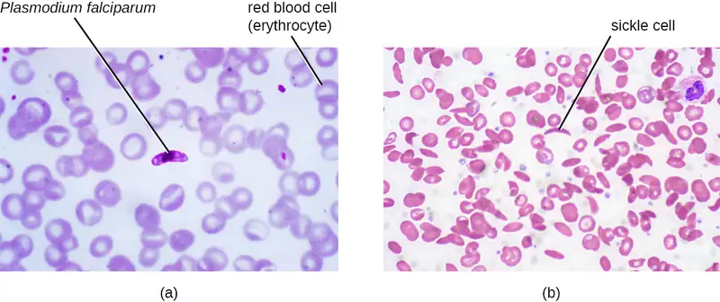
Link to Learning
Lists of common infectious diseases can be found at the following Centers for Disease Control and Prevention (CDC), World Health Organization (WHO), and International Classification of Diseases websites.
Check Your Understanding
- Describe how a disease can be infectious but not contagious.
- Explain the difference between iatrogenic disease and nosocomial disease.
Periods of Disease¶
The five periods of disease (sometimes referred to as stages or phases) include the incubation, prodromal, illness, decline, and convalescence periods (Figure 15.3). The incubation period occurs in an acute disease after the initial entry of the pathogen into the host (patient). It is during this time the pathogen begins multiplying in the host. However, there are insufficient numbers of pathogen particles (cells or viruses) present to cause signs and symptoms of disease. Incubation periods can vary from a day or two in acute disease to months or years in chronic disease, depending upon the pathogen. Factors involved in determining the length of the incubation period are diverse, and can include strength of the pathogen, strength of the host immune defenses, site of infection, type of infection, and the size infectious dose received. During this incubation period, the patient is unaware that a disease is beginning to develop.
![A graph titled “Periods of Disease” with time on the X axis and two separate Y-axes: number of pathogen particles (red) and severity of symptoms (blue). Both of these lines mirror each other and have a general bell shape. The first stage is incubation period when there are few pathogens and symptoms are mild. The next stage is prodromal period when the number of pathogens is increasing and symptoms are becoming more severe. The next stage is period of illness where numbers of pathogens and symptoms both continue to increase. The next stage is period of decline in infection where the number of pathogens is decreasing and symptoms are becoming less severe. The final stage is period of convalescence when symptoms go away and the number of pathogens decrease. Note that there are still pathogens present even after there are no more symptoms of the disease.](img/osc-microbio-15-01-stages.webp)
The prodromal period occurs after the incubation period. During this phase, the pathogen continues to multiply and the host begins to experience general signs and symptoms of illness, which typically result from activation of the immune system, such as fever, pain, soreness, swelling, or inflammation. Usually, such signs and symptoms are too general to indicate a particular disease. Following the prodromal period is the period of illness, during which the signs and symptoms of disease are most obvious and severe.
The period of illness is followed by the period of decline, during which the number of pathogen particles begins to decrease, and the signs and symptoms of illness begin to decline. However, during the decline period, patients may become susceptible to developing secondary infections because their immune systems have been weakened by the primary infection. The final period is known as the period of convalescence. During this stage, the patient generally returns to normal functions, although some diseases may inflict permanent damage that the body cannot fully repair.
Infectious diseases can be contagious during all five of the periods of disease. Which periods of disease are more likely to associated with transmissibility of an infection depends upon the disease, the pathogen, and the mechanisms by which the disease develops and progresses. For example, with meningitis (infection of the lining of brain), the periods of infectivity depend on the type of pathogen causing the infection. Patients with bacterial meningitis are contagious during the incubation period for up to a week before the onset of the prodromal period, whereas patients with viral meningitis become contagious when the first signs and symptoms of the prodromal period appear. With many viral diseases associated with rashes (e.g., chickenpox, measles, rubella, roseola), patients are contagious during the incubation period up to a week before the rash develops. In contrast, with many respiratory infections (e.g., colds, influenza, diphtheria, strep throat, and pertussis) the patient becomes contagious with the onset of the prodromal period. Depending upon the pathogen, the disease, and the individual infected, transmission can still occur during the periods of decline, convalescence, and even long after signs and symptoms of the disease disappear. For example, an individual recovering from a diarrheal disease may continue to carry and shed the pathogen in feces for some time, posing a risk of transmission to others through direct contact or indirect contact (e.g., through contaminated objects or food).
Check Your Understanding
- Name some of the factors that can affect the length of the incubation period of a particular disease.
Acute and Chronic Diseases¶
The duration of the period of illness can vary greatly, depending on the pathogen, effectiveness of the immune response in the host, and any medical treatment received. For an acute disease, pathologic changes occur over a relatively short time (e.g., hours, days, or a few weeks) and involve a rapid onset of disease conditions. For example, influenza (caused by Influenzavirus) is considered an acute disease because the incubation period is approximately 1–2 days. Infected individuals can spread influenza to others for approximately 5 days after becoming ill. After approximately 1 week, individuals enter the period of decline.
For a chronic disease, pathologic changes can occur over longer time spans (e.g., months, years, or a lifetime). For example, chronic gastritis (inflammation of the lining of the stomach) is caused by the gram-negative bacterium Helicobacter pylori. H. pylori is able to colonize the stomach and persist in its highly acidic environment by producing the enzyme urease, which modifies the local acidity, allowing the bacteria to survive indefinitely.2 Consequently, H. pylori infections can recur indefinitely unless the infection is cleared using antibiotics.3 Hepatitis B virus can cause a chronic infection in some patients who do not eliminate the virus after the acute illness. A chronic infection with hepatitis B virus is characterized by the continued production of infectious virus for 6 months or longer after the acute infection, as measured by the presence of viral antigen in blood samples.
In latent diseases, as opposed to chronic infections, the causal pathogen goes dormant for extended periods of time with no active replication. Examples of diseases that go into a latent state after the acute infection include herpes (herpes simplex viruses [HSV-1 and HSV-2]), chickenpox (varicella-zoster virus [VZV]), and mononucleosis (Epstein-Barr virus [EBV]). HSV-1, HSV-2, and VZV evade the host immune system by residing in a latent form within cells of the nervous system for long periods of time, but they can reactivate to become active infections during times of stress and immunosuppression. For example, an initial infection by VZV may result in a case of childhood chickenpox, followed by a long period of latency. The virus may reactivate decades later, causing episodes of shingles in adulthood. EBV goes into latency in B cells of the immune system and possibly epithelial cells; it can reactivate years later to produce B-cell lymphoma.
Check Your Understanding
- Explain the difference between latent disease and chronic disease.
15.2 How Pathogens Cause Disease¶
Learning Objectives
By the end of this section, you will be able to:
- Summarize Koch’s postulates and molecular Koch’s postulates, respectively, and explain their significance and limitations
- Explain the concept of pathogenicity (virulence) in terms of infectious and lethal dose
- Distinguish between primary and opportunistic pathogens and identify specific examples of each
- Summarize the stages of pathogenesis
- Explain the roles of portals of entry and exit in the transmission of disease and identify specific examples of these portals
For most infectious diseases, the ability to accurately identify the causative pathogen is a critical step in finding or prescribing effective treatments. Today’s physicians, patients, and researchers owe a sizable debt to the physician Robert Koch (1843–1910), who devised a systematic approach for confirming causative relationships between diseases and specific pathogens.
Koch’s Postulates¶
In 1884, Koch published four postulates (Table 15.3) that summarized his method for determining whether a particular microorganism was the cause of a particular disease. Each of Koch’s postulates represents a criterion that must be met before a disease can be positively linked with a pathogen. In order to determine whether the criteria are met, tests are performed on laboratory animals and cultures from healthy and diseased animals are compared (Figure 15.4).
Table 15.3
| Koch’s Postulates |
|---|
| (1) The suspected pathogen must be found in every case of disease and not be found in healthy individuals. |
| (2) The suspected pathogen can be isolated and grown in pure culture. |
| (3) A healthy test subject infected with the suspected pathogen must develop the same signs and symptoms of disease as seen in postulate 1. |
| (4) The pathogen must be re-isolated from the new host and must be identical to the pathogen from postulate 2. |
![A diagram Koch’s postulates. 1 – The suspected causative agent must be absent from all healthy organisms but present in all diseased organisms. This is demonstrated by looking at slides under a microscope from a sick mouse and seeing the suspected agent. A slide from a healthy mouse only shows healthy red blood cells. 2 – The causative agent must be isolated from the diseased organism and grown in pure culture. This is demonstrated by showing grown on a petri plate from the sick mouse and no growth from the healthy mouse. 3 – The cultured agend must cause the same disease when inoculated into a healthy, susceptible organism. This is demonstrated by injecting a healthy mouse with the cultured agent and having that mouse get sick. 4 – The same causative agent must then be reisolated from the inoculated diseased organism. This is demonstrated by a petri plate from this last mouse showing growth of the causative agent.](img/osc-microbio-15-01-koch.webp)
In many ways, Koch’s postulates are still central to our current understanding of the causes of disease. However, advances in microbiology have revealed some important limitations in Koch’s criteria. Koch made several assumptions that we now know are untrue in many cases. The first relates to postulate 1, which assumes that pathogens are only found in diseased, not healthy, individuals. This is not true for many pathogens. For example, H. pylori, described earlier in this chapter as a pathogen causing chronic gastritis, is also part of the normal microbiota of the stomach in many healthy humans who never develop gastritis. It is estimated that upwards of 50% of the human population acquires H. pylori early in life, with most maintaining it as part of the normal microbiota for the rest of their life without ever developing disease. Similarly, when Alice Katherine Evans discovered that Brucellis bacteria found in cows was responsible for a common human disease, she noted that the infected cattle could pass on the infection whether or not they displayed symptoms. This is an important distinction: Even without knowledge of microbiology, many people would not consume milk from a visibly sick cow, but the concept of a healthy cow being infectious is critical to understanding the risks posed by pathogens.
Koch’s second faulty assumption was that all healthy test subjects are equally susceptible to disease. We now know that individuals are not equally susceptible to disease. Individuals are unique in terms of their microbiota and the state of their immune system at any given time. The makeup of the resident microbiota can influence an individual’s susceptibility to an infection. Members of the normal microbiota play an important role in immunity by inhibiting the growth of transient pathogens. In some cases, the microbiota may prevent a pathogen from establishing an infection; in others, it may not prevent an infection altogether but may influence the severity or type of signs and symptoms. As a result, two individuals with the same disease may not always present with the same signs and symptoms. In addition, some individuals have stronger immune systems than others. Individuals with immune systems weakened by age or an unrelated illness are much more susceptible to certain infections than individuals with strong immune systems.
Koch also assumed that all pathogens are microorganisms that can be grown in pure culture (postulate 2) and that animals could serve as reliable models for human disease. However, we now know that not all pathogens can be grown in pure culture, and many human diseases cannot be reliably replicated in animal hosts. Viruses and certain bacteria, including Rickettsia and Chlamydia, are obligate intracellular pathogens that can grow only when inside a host cell. If a microbe cannot be cultured, a researcher cannot move past postulate 2. Likewise, without a suitable nonhuman host, a researcher cannot evaluate postulate 3 without deliberately infecting humans, which presents obvious ethical concerns. AIDS is an example of such a disease because the human immunodeficiency virus (HIV) only causes disease in humans.
Check Your Understanding
- Briefly summarize the limitations of Koch’s postulates.
Molecular Koch’s Postulates¶
In 1988, Stanley Falkow (1934–) proposed a revised form of Koch’s postulates known as molecular Koch’s postulates. These are listed in the left column of Table 15.4. The premise for molecular Koch’s postulates is not in the ability to isolate a particular pathogen but rather to identify a gene that may cause the organism to be pathogenic.
Falkow’s modifications to Koch’s original postulates explain not only infections caused by intracellular pathogens but also the existence of pathogenic strains of organisms that are usually nonpathogenic. For example, the predominant form of the bacterium Escherichia coli is a member of the normal microbiota of the human intestine and is generally considered harmless. However, there are pathogenic strains of E. coli such as enterotoxigenic E. coli (ETEC) and enterohemorrhagic E. coli (O157:H7) (EHEC). We now know ETEC and EHEC exist because of the acquisition of new genes by the once-harmless E. coli, which, in the form of these pathogenic strains, is now capable of producing toxins and causing illness. The pathogenic forms resulted from minor genetic changes. The right-side column of Table 15.4 illustrates how molecular Koch’s postulates can be applied to identify EHEC as a pathogenic bacterium.
Table 15.4
| Molecular Koch’s Postulates Applied to EHEC | |
|---|---|
| Molecular Koch’s Postulates | Application to EHEC |
| (1) The phenotype (sign or symptom of disease) should be associated only with pathogenic strains of a species. | EHEC causes intestinal inflammation and diarrhea, whereas nonpathogenic strains of E. coli do not. |
| (2) Inactivation of the suspected gene(s) associated with pathogenicity should result in a measurable loss of pathogenicity. | One of the genes in EHEC encodes for Shiga toxin, a bacterial toxin (poison) that inhibits protein synthesis. Inactivating this gene reduces the bacteria’s ability to cause disease. |
| (3) Reversion of the inactive gene should restore the disease phenotype. | By adding the gene that encodes the toxin back into the genome (e.g., with a phage or plasmid), EHEC’s ability to cause disease is restored. |
As with Koch’s original postulates, the molecular Koch’s postulates have limitations. For example, genetic manipulation of some pathogens is not possible using current methods of molecular genetics. In a similar vein, some diseases do not have suitable animal models, which limits the utility of both the original and molecular postulates.
Check Your Understanding
- Explain the differences between Koch’s original postulates and the molecular Koch’s postulates.
Pathogenicity and Virulence¶
The ability of a microbial agent to cause disease is called pathogenicity, and the degree to which an organism is pathogenic is called virulence. Virulence is a continuum. On one end of the spectrum are organisms that are avirulent (not harmful) and on the other are organisms that are highly virulent. Highly virulent pathogens will almost always lead to a disease state when introduced to the body, and some may even cause multi-organ and body system failure in healthy individuals. Less virulent pathogens may cause an initial infection, but may not always cause severe illness. Pathogens with low virulence would more likely result in mild signs and symptoms of disease, such as low-grade fever, headache, or muscle aches. Some individuals might even be asymptomatic.
An example of a highly virulent microorganism is Bacillus anthracis, the pathogen responsible for anthrax. B. anthracis can produce different forms of disease, depending on the route of transmission (e.g., cutaneous injection, inhalation, ingestion). The most serious form of anthrax is inhalation anthrax. After B. anthracis spores are inhaled, they germinate. An active infection develops and the bacteria release potent toxins that cause edema (fluid buildup in tissues), hypoxia (a condition preventing oxygen from reaching tissues), and necrosis (cell death and inflammation). Signs and symptoms of inhalation anthrax include high fever, difficulty breathing, vomiting and coughing up blood, and severe chest pains suggestive of a heart attack. With inhalation anthrax, the toxins and bacteria enter the bloodstream, which can lead to multi-organ failure and death of the patient. If a gene (or genes) involved in pathogenesis is inactivated, the bacteria become less virulent or nonpathogenic.
Virulence of a pathogen can be quantified using controlled experiments with laboratory animals. Two important indicators of virulence are the median infectious dose (ID50) and the median lethal dose (LD50), both of which are typically determined experimentally using animal models. The ID50 is the number of pathogen cells or virions required to cause active infection in 50% of inoculated animals. The LD50 is the number of pathogenic cells, virions, or amount of toxin required to kill 50% of infected animals. To calculate these values, each group of animals is inoculated with one of a range of known numbers of pathogen cells or virions. In graphs like the one shown in Figure 15.5, the percentage of animals that have been infected (for ID50) or killed (for LD50) is plotted against the concentration of pathogen inoculated. Figure 15.5 represents data graphed from a hypothetical experiment measuring the LD50 of a pathogen. Interpretation of the data from this graph indicates that the LD50 of the pathogen for the test animals is 104 pathogen cells or virions (depending upon the pathogen studied).
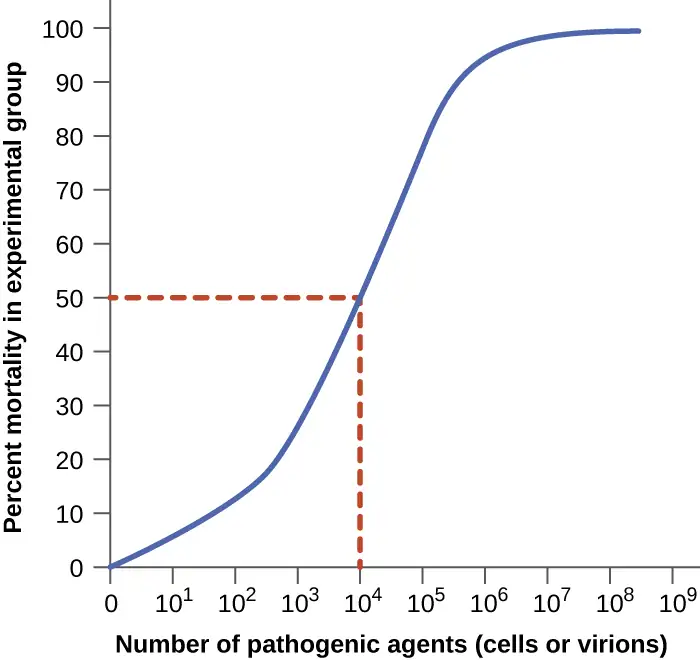
Table 15.5 lists selected foodborne pathogens and their ID50 values in humans (as determined from epidemiologic data and studies on human volunteers). Keep in mind that these are median values. The actual infective dose for an individual can vary widely, depending on factors such as route of entry; the age, health, and immune status of the host; and environmental and pathogen-specific factors such as susceptibility to the acidic pH of the stomach. It is also important to note that a pathogen’s infective dose does not necessarily correlate with disease severity. For example, just a single cell of Salmonella enterica serotype Typhimurium can result in an active infection. The resultant disease, Salmonella gastroenteritis or salmonellosis, can cause nausea, vomiting, and diarrhea, but has a mortality rate of less than 1% in healthy adults. In contrast, S. enterica serotype Typhi has a much higher ID50, typically requiring as many as 1,000 cells to produce infection. However, this serotype causes typhoid fever, a much more systemic and severe disease that has a mortality rate as high as 10% in untreated individuals.
Table 15.5
| ID50 for Selected Foodborne Diseases4 | |
|---|---|
| Pathogen | ID50 |
| Viruses | |
| Hepatitis A virus | 10–100 |
| Norovirus | 1–10 |
| Rotavirus | 10–100 |
| Bacteria | |
| Escherichia coli, enterohemorrhagic (EHEC, serotype O157) | 10–100 |
| E. coli, enteroinvasive (EIEC) | 200–5,000 |
| E. coli, enteropathogenic (EPEC) | 10,000,000–10,000,000,000 |
| E. coli, enterotoxigenic (ETEC) | 10,000,000–10,000,000,000 |
| Salmonella enterica serovar Typhi | <1,000 |
| S. enterica serovar Typhimurium | ≥1 |
| Shigella dysenteriae | 10–200 |
| Vibrio cholerae (serotypes O139, O1) | 1,000,000 |
| V. parahemolyticus | 100,000,000 |
| Protozoa | |
| Giardia lamblia | 1 |
| Cryptosporidium parvum | 10–100 |
Check Your Understanding
- What is the difference between a pathogen’s infective dose and lethal dose?
- Which is more closely related to the severity of a disease?
Primary Pathogens versus Opportunistic Pathogens¶
Pathogens can be classified as either primary pathogens or opportunistic pathogens. A primary pathogen can cause disease in a host regardless of the host’s resident microbiota or immune system. An opportunistic pathogen, by contrast, can only cause disease in situations that compromise the host’s defenses, such as the body’s protective barriers, immune system, or normal microbiota. Individuals susceptible to opportunistic infections include the very young, the elderly, people who are pregnant, patients undergoing chemotherapy, people with immunodeficiencies (such as acquired immunodeficiency syndrome [AIDS]), patients who are recovering from surgery, and those who have had a breach of protective barriers (such as a severe wound or burn).
An example of a primary pathogen is enterohemorrhagic E. coli (EHEC), which produces a virulence factor known as Shiga toxin. This toxin inhibits protein synthesis, leading to severe and bloody diarrhea, inflammation, and renal failure, even in patients with healthy immune systems. Staphylococcus epidermidis, on the other hand, is an opportunistic pathogen that is among the most frequent causes of nosocomial disease.5 S. epidermidis is a member of the normal microbiota of the skin, where it is generally avirulent. However, in hospitals, it can also grow in biofilms that form on catheters, implants, or other devices that are inserted into the body during surgical procedures. Once inside the body, S. epidermidis can cause serious infections such as endocarditis, and it produces virulence factors that promote the persistence of such infections.
Other members of the normal microbiota can also cause opportunistic infections under certain conditions. This often occurs when microbes that reside harmlessly in one body location end up in a different body system, where they cause disease. For example, E. coli normally found in the large intestine can cause a urinary tract infection if it enters the bladder. This is the leading cause of urinary tract infections among females.
Members of the normal microbiota may also cause disease when a shift in the environment of the body leads to overgrowth of a particular microorganism. For example, the yeast Candida is part of the normal microbiota of the skin, mouth, intestine, and vagina, but its population is kept in check by other organisms of the microbiota. If an individual is taking antibacterial medications, however, bacteria that would normally inhibit the growth of Candida can be killed off, leading to a sudden growth in the population of Candida, which is not affected by antibacterial medications because it is a fungus. An overgrowth of Candida can manifest as oral thrush (growth on mouth, throat, and tongue), a vaginal yeast infection, or cutaneous candidiasis. Other scenarios can also provide opportunities for Candida infections. Untreated diabetes can result in a high concentration of glucose in the saliva, which provides an optimal environment for the growth of Candida, resulting in thrush. Immunodeficiencies such as those seen in patients with HIV, AIDS, and cancer also lead to higher incidence of thrush. Vaginal yeast infections can result from decreases in estrogen levels during the menstruation or menopause. The amount of glycogen available to lactobacilli in the vagina is controlled by levels of estrogen; when estrogen levels are low, lactobacilli produce less lactic acid. The resultant increase in vaginal pH allows overgrowth of Candida in the vagina.
Check Your Understanding
- Explain the difference between a primary pathogen and an opportunistic pathogen.
- Describe some conditions under which an opportunistic infection can occur.
Stages of Pathogenesis¶
To cause disease, a pathogen must successfully achieve four steps or stages of pathogenesis: exposure (contact), adhesion (colonization), invasion, and infection. The pathogen must be able to gain entry to the host, travel to the location where it can establish an infection, evade or overcome the host’s immune response, and cause damage (i.e., disease) to the host. In many cases, the cycle is completed when the pathogen exits the host and is transmitted to a new host.
Exposure¶
An encounter with a potential pathogen is known as exposure or contact. The food we eat and the objects we handle are all ways that we can come into contact with potential pathogens. Yet, not all contacts result in infection and disease. For a pathogen to cause disease, it needs to be able to gain access into host tissue. An anatomic site through which pathogens can pass into host tissue is called a portal of entry. These are locations where the host cells are in direct contact with the external environment. Major portals of entry are identified in Figure 15.6 and include the skin, mucous membranes, and parenteral routes.
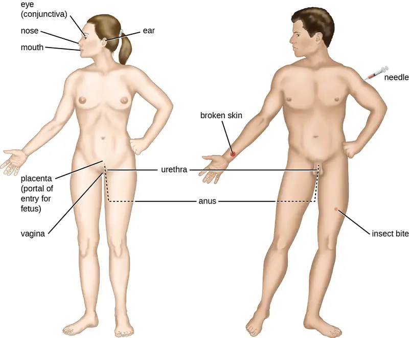
Mucosal surfaces are the most important portals of entry for microbes; these include the mucous membranes of the respiratory tract, the gastrointestinal tract, and the genitourinary tract. Although most mucosal surfaces are in the interior of the body, some are contiguous with the external skin at various body openings, including the eyes, nose, mouth, urethra, and anus.
Most pathogens are suited to a particular portal of entry. A pathogen’s portal specificity is determined by the organism’s environmental adaptions and by the enzymes and toxins they secrete. The respiratory and gastrointestinal tracts are particularly vulnerable portals of entry because particles that include microorganisms are constantly inhaled or ingested, respectively.
Pathogens can also enter through a breach in the protective barriers of the skin and mucous membranes. Pathogens that enter the body in this way are said to enter by the parenteral route. For example, the skin is a good natural barrier to pathogens, but breaks in the skin (e.g., wounds, insect bites, animal bites, needle pricks) can provide a parenteral portal of entry for microorganisms.
In pregnant people, the placenta normally prevents microorganisms from passing from the pregnant person to the fetus. However, a few pathogens are capable of crossing the blood-placental barrier. The gram-positive bacterium Listeria monocytogenes, which causes the foodborne disease listeriosis, is one example that poses a serious risk to the fetus and can sometimes lead to spontaneous abortion. Other pathogens that can pass the placental barrier to infect the fetus are known collectively by the acronym TORCH (Table 15.6).
Transmission of infectious diseases to the baby is also a concern at the time of birth when the baby passes through the birth canal. Those who have active chlamydia or gonorrhea infections may expose babies the causative pathogens in the vagina, which can result in eye infections that lead to blindness. To prevent this, it is standard practice to administer antibiotic drops to infants’ eyes shortly after birth.
Table 15.6
| Pathogens Capable of Crossing the Placental Barrier (TORCH Infections) | ||
|---|---|---|
| Disease | Pathogen | |
| T | Toxoplasmosis | Toxoplasma gondii (protozoan) |
| O6 | Syphilis Chickenpox Hepatitis B HIV Fifth disease (erythema infectiosum) |
Treponema pallidum (bacterium) Varicella-zoster virus (human herpesvirus 3) Hepatitis B virus (hepadnavirus) Retrovirus Parvovirus B19 |
| R | Rubella (German measles) | Togavirus |
| C | Cytomegalovirus | Human herpesvirus 5 |
| H | Herpes | Herpes simplex viruses (HSV) 1 and 2 |
Clinical Focus: Part 2
At the clinic, a physician takes down Michael’s medical history and asks about his activities and diet over the past week. Upon learning that Michael became sick the day after the party, the physician orders a blood test to check for pathogens associated with foodborne diseases. After tests confirm that presence of a gram-positive rod in Michael’s blood, he is given an injection of a broad-spectrum antibiotic and sent to a nearby hospital, where he is admitted as a patient. There he is to receive additional intravenous antibiotic therapy and fluids.
- Is this bacterium in Michael’s blood part of normal microbiota?
- What portal of entry did the bacteria use to cause this infection?
Jump to the next Clinical Focus box. Go back to the previous Clinical Focus box.
Adhesion¶
Following the initial exposure, the pathogen adheres at the portal of entry. The term adhesion refers to the capability of pathogenic microbes to attach to the cells of the body using adhesion factors, and different pathogens use various mechanisms to adhere to the cells of host tissues.
Molecules (either proteins or carbohydrates) called adhesins are found on the surface of certain pathogens and bind to specific receptors (glycoproteins) on host cells. Adhesins are present on the fimbriae and flagella of bacteria, the cilia of protozoa, and the capsids or membranes of viruses. Protozoans can also use hooks and barbs for adhesion; spike proteins on viruses also enhance viral adhesion. The production of glycocalyces (slime layers and capsules) (Figure 15.7), with their high sugar and protein content, can also allow certain bacterial pathogens to attach to cells.
Biofilm growth can also act as an adhesion factor. A biofilm is a community of bacteria that produce a glycocalyx, known as extrapolymeric substance (EPS), that allows the biofilm to attach to a surface. Persistent Pseudomonas aeruginosa infections are common in patients suffering from cystic fibrosis, burn wounds, and middle-ear infections (otitis media) because P. aeruginosa produces a biofilm. The EPS allows the bacteria to adhere to the host cells and makes it harder for the host to physically remove the pathogen. The EPS not only allows for attachment but provides protection against the immune system and antibiotic treatments, preventing antibiotics from reaching the bacterial cells within the biofilm. In addition, not all bacteria in a biofilm are rapidly growing; some are in stationary phase. Since antibiotics are most effective against rapidly growing bacteria, portions of bacteria in a biofilm are protected against antibiotics.7
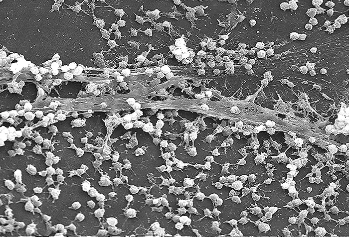
Invasion¶
Once adhesion is successful, invasion can proceed. Invasion involves the dissemination of a pathogen throughout local tissues or the body. Pathogens may produce exoenzymes or toxins, which serve as virulence factors that allow them to colonize and damage host tissues as they spread deeper into the body. Pathogens may also produce virulence factors that protect them against immune system defenses. A pathogen’s specific virulence factors determine the degree of tissue damage that occurs. Figure 15.8 shows the invasion of H. pylori into the tissues of the stomach, causing damage as it progresses.
![Diagram of H. pylori invading the lining of the stomach. In the first image the H. pylori (an oval cell with 3 flagella is not able to penetrate the gastric mucin gel on top of the epithelial cells. Contact with stomach acid keeps the mucin lining the epithelial cell layer in a spongy gel-like state. This consistency is impermeable to the bacterium H. pylori. The second image shows the bacterium entering the lining. The bacterium releases urease, which neutralizes the stomach acid. This causes the mucin to liquefy and the bacterium can swim right through it.](img/osc-microbio-15-02-invasion.webp)
Intracellular pathogens achieve invasion by entering the host’s cells and reproducing. Some are obligate intracellular pathogens (meaning they can only reproduce inside of host cells) and others are facultative intracellular pathogens (meaning they can reproduce either inside or outside of host cells). By entering the host cells, intracellular pathogens are able to evade some mechanisms of the immune system while also exploiting the nutrients in the host cell.
Entry to a cell can occur by endocytosis. For most kinds of host cells, pathogens use one of two different mechanisms for endocytosis and entry. One mechanism relies on effector proteins secreted by the pathogen; these effector proteins trigger entry into the host cell. This is the method that Salmonella and Shigella use when invading intestinal epithelial cells. When these pathogens come in contact with epithelial cells in the intestine, they secrete effector molecules that cause protrusions of membrane ruffles that bring the bacterial cell in. This process is called membrane ruffling. The second mechanism relies on surface proteins expressed on the pathogen that bind to receptors on the host cell, resulting in entry. For example, Yersinia pseudotuberculosis produces a surface protein known as invasin that binds to beta-1 integrins expressed on the surface of host cells.
Some host cells, such as white blood cells and other phagocytes of the immune system, actively endocytose pathogens in a process called phagocytosis. Although phagocytosis allows the pathogen to gain entry to the host cell, in most cases, the host cell kills and degrades the pathogen by using digestive enzymes. Normally, when a pathogen is ingested by a phagocyte, it is enclosed within a phagosome in the cytoplasm; the phagosome fuses with a lysosome to form a phagolysosome, where digestive enzymes kill the pathogen (see Pathogen Recognition and Phagocytosis). However, some intracellular pathogens have the ability to survive and multiply within phagocytes. Examples include Listeria monocytogenes and Shigella; these bacteria produce proteins that lyse the phagosome before it fuses with the lysosome, allowing the bacteria to escape into the phagocyte’s cytoplasm where they can multiply. Bacteria such as Mycobacterium tuberculosis, Legionella pneumophila, and Salmonella species use a slightly different mechanism to evade being digested by the phagocyte. These bacteria prevent the fusion of the phagosome with the lysosome, thus remaining alive and dividing within the phagosome.
Infection¶
Following invasion, successful multiplication of the pathogen leads to infection. Infections can be described as local, focal, or systemic, depending on the extent of the infection. A local infection is confined to a small area of the body, typically near the portal of entry. For example, a hair follicle infected by Staphylococcus aureus infection may result in a boil around the site of infection, but the bacterium is largely contained to this small location. Other examples of local infections that involve more extensive tissue involvement include urinary tract infections confined to the bladder or pneumonia confined to the lungs.
In a focal infection, a localized pathogen, or the toxins it produces, can spread to a secondary location. For example, a dental hygienist nicking the gum with a sharp tool can lead to a local infection in the gum by Streptococcus bacteria of the normal oral microbiota. These Streptococcus spp. may then gain access to the bloodstream and make their way to other locations in the body, resulting in a secondary infection.
When an infection becomes disseminated throughout the body, we call it a systemic infection. For example, infection by the varicella-zoster virus typically gains entry through a mucous membrane of the upper respiratory system. It then spreads throughout the body, resulting in the classic red skin lesions associated with chickenpox. Since these lesions are not sites of initial infection, they are signs of a systemic infection.
Sometimes a primary infection, the initial infection caused by one pathogen, can lead to a secondary infection by another pathogen. For example, the immune system of a patient with a primary infection by HIV becomes compromised, making the patient more susceptible to secondary diseases like oral thrush and others caused by opportunistic pathogens. Similarly, a primary infection by Influenzavirus damages and decreases the defense mechanisms of the lungs, making patients more susceptible to a secondary pneumonia by a bacterial pathogen like Haemophilus influenzae or Streptococcus pneumoniae. Some secondary infections can even develop as a result of treatment for a primary infection. Antibiotic therapy targeting the primary pathogen can cause collateral damage to the normal microbiota, creating an opening for opportunistic pathogens (see Case in Point: A Secondary Yeast Infection).
Case in Point: A Secondary Yeast Infection
Anita, a 36-year-old mother of three, goes to an urgent care center complaining of pelvic pressure, frequent and painful urination, abdominal cramps, and occasional blood-tinged urine. Suspecting a urinary tract infection (UTI), the physician requests a urine sample and sends it to the lab for a urinalysis. Since it will take approximately 24 hours to get the results of the culturing, the physician immediately starts Anita on the antibiotic ciprofloxacin. The next day, the microbiology lab confirms the presence of E. coli in Anita’s urine, which is consistent with the presumptive diagnosis. However, the antimicrobial susceptibility test indicates that ciprofloxacin would not effectively treat Anita’s UTI, so the physician prescribes a different antibiotic.
After taking her antibiotics for 1 week, Anita returns to the clinic complaining that the prescription is not working. Although the painful urination has subsided, she is now experiencing vaginal itching, burning, and discharge. After a brief examination, the physician explains to Anita that the antibiotics were likely successful in killing the E. coli responsible for her UTI; however, in the process, they also wiped out many of the “good” bacteria in Anita’s normal microbiota. The new symptoms that Anita has reported are consistent with a secondary yeast infection by Candida albicans, an opportunistic fungus that normally resides in the vagina but is inhibited by the bacteria that normally reside in the same environment.
To confirm this diagnosis, a microscope slide of a direct vaginal smear is prepared from the discharge to check for the presence of yeast. A sample of the discharge accompanies this slide to the microbiology lab to determine if there has been an increase in the population of yeast causing vaginitis. After the microbiology lab confirms the diagnosis, the physician prescribes an antifungal drug for Anita to use to eliminate her secondary yeast infection.
- Why was Candida not killed by the antibiotics prescribed for the UTI?
Check Your Understanding
- List three conditions that could lead to a secondary infection.
Transmission of Disease¶
For a pathogen to persist, it must put itself in a position to be transmitted to a new host, leaving the infected host through a portal of exit (Figure 15.9). As with portals of entry, many pathogens are adapted to use a particular portal of exit. Similar to portals of entry, the most common portals of exit include the skin and the respiratory, urogenital, and gastrointestinal tracts. Coughing and sneezing can expel pathogens from the respiratory tract. A single sneeze can send thousands of virus particles into the air. Secretions and excretions can transport pathogens out of other portals of exit. Feces, urine, semen, vaginal secretions, tears, sweat, and shed skin cells can all serve as vehicles for a pathogen to leave the body. Pathogens that rely on insect vectors for transmission exit the body in the blood extracted by a biting insect. Similarly, some pathogens exit the body in blood extracted by needles.
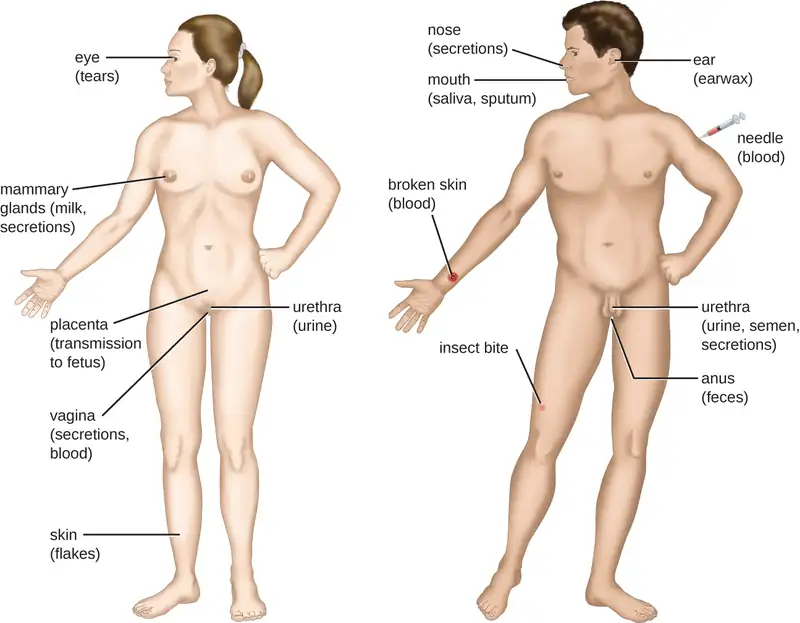
15.3 Virulence Factors of Bacterial and Viral Pathogens¶
Learning Objectives
By the end of this section, you will be able to:
- Explain how virulence factors contribute to signs and symptoms of infectious disease
- Differentiate between endotoxins and exotoxins
- Describe and differentiate between various types of exotoxins
- Describe the mechanisms viruses use for adhesion and antigenic variation
In the previous section, we explained that some pathogens are more virulent than others. This is due to the unique virulence factors produced by individual pathogens, which determine the extent and severity of disease they may cause. A pathogen’s virulence factors are encoded by genes that can be identified using molecular Koch’s postulates. When genes encoding virulence factors are inactivated, virulence in the pathogen is diminished. In this section, we examine various types and specific examples of virulence factors and how they contribute to each step of pathogenesis.
Virulence Factors for Adhesion¶
As discussed in the previous section, the first two steps in pathogenesis are exposure and adhesion. Recall that an adhesin is a protein or glycoprotein found on the surface of a pathogen that attaches to receptors on the host cell. Adhesins are found on bacterial, viral, fungal, and protozoan pathogens. One example of a bacterial adhesin is type 1 fimbrial adhesin, a molecule found on the tips of fimbriae of enterotoxigenic E. coli (ETEC). Recall that fimbriae are hairlike protein bristles on the cell surface. Type 1 fimbrial adhesin allows the fimbriae of ETEC cells to attach to the mannose glycans expressed on intestinal epithelial cells. Table 15.7 lists common adhesins found in some of the pathogens we have discussed or will be seeing later in this chapter.
Table 15.7
| Some Bacterial Adhesins and Their Host Attachment Sites | |||
|---|---|---|---|
| Pathogen | Disease | Adhesin | Attachment Site |
| Streptococcus pyogenes | Strep throat | Protein F | Respiratory epithelial cells |
| Streptococcus mutans | Dental caries | Adhesin P1 | Teeth |
| Neisseria gonorrhoeae | Gonorrhea | Type IV pili | Urethral epithelial cells |
| Enterotoxigenic E. coli (ETEC) | Traveler’s diarrhea | Type 1 fimbriae | Intestinal epithelial cells |
| Vibrio cholerae | Cholera | N-methylphenylalanine pili | Intestinal epithelial cells |
Clinical Focus: Part 3
The presence of bacteria in Michael’s blood is a sign of infection, since blood is normally sterile. There is no indication that the bacteria entered the blood through an injury. Instead, it appears the portal of entry was the gastrointestinal route. Based on Michael’s symptoms, the results of his blood test, and the fact that Michael was the only one in the family to partake of the hot dogs, the physician suspects that Michael is suffering from a case of listeriosis.
Listeria monocytogenes, the facultative intracellular pathogen that causes listeriosis, is a common contaminant in ready-to-eat foods such as lunch meats and dairy products. Once ingested, these bacteria invade intestinal epithelial cells and translocate to the liver, where they grow inside hepatic cells. Listeriosis is fatal in about one in five normal healthy people, and mortality rates are slightly higher in patients with pre-existing conditions that weaken the immune response. A cluster of virulence genes encoded on a pathogenicity island is responsible for the pathogenicity of L. monocytogenes. These genes are regulated by a transcriptional factor known as peptide chain release factor 1 (PrfA). One of the genes regulated by PrfA is hyl, which encodes a toxin known as listeriolysin O (LLO), which allows the bacterium to escape vacuoles upon entry into a host cell. A second gene regulated by PrfA is actA, which encodes for a surface protein known as actin assembly-inducing protein (ActA). ActA is expressed on the surface of Listeria and polymerizes host actin. This enables the bacterium to produce actin tails, move around the cell’s cytoplasm, and spread from cell to cell without exiting into the extracellular compartment.
Michael’s condition has begun to worsen. He is now experiencing a stiff neck and hemiparesis (weakness of one side of the body). Concerned that the infection is spreading, the physician decides to conduct additional tests to determine what is causing these new symptoms.
- What kind of pathogen causes listeriosis, and what virulence factors contribute to the signs and symptoms Michael is experiencing?
- Is it likely that the infection will spread from Michael’s blood? If so, how might this explain his new symptoms?
Jump to the next Clinical Focus box. Go back to the previous Clinical Focus box.
Bacterial Exoenzymes and Toxins as Virulence Factors¶
After exposure and adhesion, the next step in pathogenesis is invasion, which can involve enzymes and toxins. Many pathogens achieve invasion by entering the bloodstream, an effective means of dissemination because blood vessels pass close to every cell in the body. The downside of this mechanism of dispersal is that the blood also includes numerous elements of the immune system. Various terms ending in –emia are used to describe the presence of pathogens in the bloodstream. The presence of bacteria in blood is called bacteremia. Bacteremia involving pyogens (pus-forming bacteria) is called pyemia. When viruses are found in the blood, it is called viremia. The term toxemia describes the condition when toxins are found in the blood. If bacteria are both present and multiplying in the blood, this condition is called septicemia.
Patients with septicemia are described as septic, which can lead to shock, a life-threatening decrease in blood pressure (systolic pressure <90 mm Hg) that prevents cells and organs from receiving enough oxygen and nutrients. Some bacteria can cause shock through the release of toxins (virulence factors that can cause tissue damage) and lead to low blood pressure. Gram-negative bacteria are engulfed by immune system phagocytes, which then release tumor necrosis factor, a molecule involved in inflammation and fever. Tumor necrosis factor binds to blood capillaries to increase their permeability, allowing fluids to pass out of blood vessels and into tissues, causing swelling, or edema (Figure 15.10). With high concentrations of tumor necrosis factor, the inflammatory reaction is severe and enough fluid is lost from the circulatory system that blood pressure decreases to dangerously low levels. This can have dire consequences because the heart, lungs, and kidneys rely on normal blood pressure for proper function; thus, multi-organ failure, shock, and death can occur.
Exoenzymes¶
Some pathogens produce extracellular enzymes, or exoenzymes, that enable them to invade host cells and deeper tissues. Exoenzymes have a wide variety of targets. Some general classes of exoenzymes and associated pathogens are listed in Table 15.8. Each of these exoenzymes functions in the context of a particular tissue structure to facilitate invasion or support its own growth and defend against the immune system. For example, hyaluronidase S, an enzyme produced by pathogens like Staphylococcus aureus, Streptococcus pyogenes, and Clostridium perfringens, degrades the glycoside hyaluronan (hyaluronic acid), which acts as an intercellular cement between adjacent cells in connective tissue (Figure 15.11). This allows the pathogen to pass through the tissue layers at the portal of entry and disseminate elsewhere in the body (Figure 15.11).
Table 15.8
| Some Classes of Exoenzymes and Their Targets | ||
|---|---|---|
| Class | Example | Function |
| Glycohydrolases | Hyaluronidase S in Staphylococcus aureus | Degrades hyaluronic acid that cements cells together to promote spreading through tissues |
| Nucleases | DNAse produced by S. aureus | Degrades DNA released by dying cells (bacteria and host cells) that can trap the bacteria, thus promoting spread |
| Phospholipases | Phospholipase C of Bacillus anthracis | Degrades phospholipid bilayer of host cells, causing cellular lysis, and degrade membrane of phagosomes to enable escape into the cytoplasm |
| Proteases | Collagenase in Clostridium perfringens | Degrades collagen in connective tissue to promote spread |
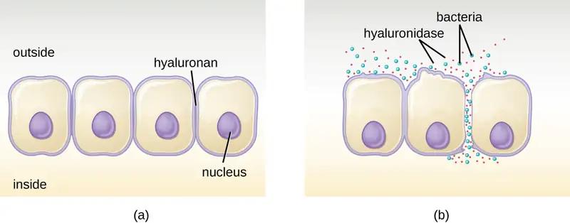
Pathogen-produced nucleases, such as DNAse produced by S. aureus, degrade extracellular DNA as a means of escape and spreading through tissue. As bacterial and host cells die at the site of infection, they lyse and release their intracellular contents. The DNA chromosome is the largest of the intracellular molecules, and masses of extracellular DNA can trap bacteria and prevent their spread. S. aureus produces a DNAse to degrade the mesh of extracellular DNA so it can escape and spread to adjacent tissues. This strategy is also used by S. aureus and other pathogens to degrade and escape webs of extracellular DNA produced by immune system phagocytes to trap the bacteria.
Enzymes that degrade the phospholipids of cell membranes are called phospholipases. Their actions are specific in regard to the type of phospholipids they act upon and where they enzymatically cleave the molecules. The pathogen responsible for anthrax, B. anthracis, produces phospholipase C. When B. anthracis is ingested by phagocytic cells of the immune system, phospholipase C degrades the membrane of the phagosome before it can fuse with the lysosome, allowing the pathogen to escape into the cytoplasm and multiply. Phospholipases can also target the membrane that encloses the phagosome within phagocytic cells. As described earlier in this chapter, this is the mechanism used by intracellular pathogens such as L. monocytogenes and Rickettsia to escape the phagosome and multiply within the cytoplasm of phagocytic cells. The role of phospholipases in bacterial virulence is not restricted to phagosomal escape. Many pathogens produce phospholipases that act to degrade cell membranes and cause lysis of target cells. These phospholipases are involved in lysis of red blood cells, white blood cells, and tissue cells.
Bacterial pathogens also produce various protein-digesting enzymes, or proteases. Proteases can be classified according to their substrate target (e.g., serine proteases target proteins with the amino acid serine) or if they contain metals in their active site (e.g., zinc metalloproteases contain a zinc ion, which is necessary for enzymatic activity).
One example of a protease that contains a metal ion is the exoenzyme collagenase. Collagenase digests collagen, the dominant protein in connective tissue. Collagen can be found in the extracellular matrix, especially near mucosal membranes, blood vessels, nerves, and in the layers of the skin. Similar to hyaluronidase, collagenase allows the pathogen to penetrate and spread through the host tissue by digesting this connective tissue protein. C. perfringens then uses toxins and a phospholipase to cause cellular lysis and necrosis. Once the host cells have died, the bacterium produces gas by fermenting the muscle carbohydrates. The widespread necrosis of tissue and accompanying gas are characteristic of the condition known as gas gangrene (Figure 15.12). Although a rare event, collagenase can allow C. perfringens to spread to the bloodstream, causing a dangerous septicemia with a high mortality rate
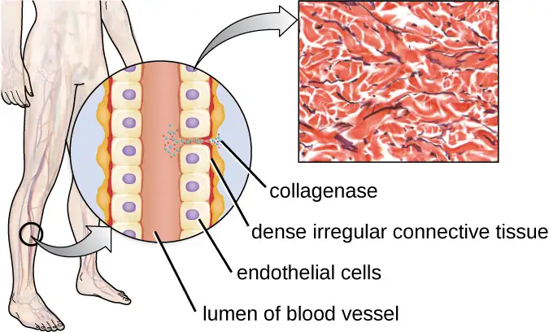
Link to Learning
Two types of cell death are apoptosis and necrosis. Visit this website to learn more about the differences between these mechanisms of cell death and their causes.
Toxins¶
In addition to exoenzymes, certain pathogens are able to produce toxins, biological poisons that assist in their ability to invade and cause damage to tissues. The ability of a pathogen to produce toxins to cause damage to host cells is called toxigenicity.
Toxins can be categorized as endotoxins or exotoxins. The lipopolysaccharide (LPS) found on the outer membrane of gram-negative bacteria is called endotoxin (Figure 15.13). During infection and disease, gram-negative bacterial pathogens release endotoxin either when the cell dies, resulting in the disintegration of the membrane, or when the bacterium undergoes binary fission. The lipid component of endotoxin, lipid A, is responsible for the toxic properties of the LPS molecule. Lipid A is relatively conserved across different genera of gram-negative bacteria; therefore, the toxic properties of lipid A are similar regardless of the gram-negative pathogen. In a manner similar to that of tumor necrosis factor, lipid A triggers the immune system’s inflammatory response (see Inflammation and Fever). If the concentration of endotoxin in the body is low, the inflammatory response may provide the host an effective defense against infection; on the other hand, high concentrations of endotoxin in the blood can cause an excessive inflammatory response, leading to a severe drop in blood pressure, multi-organ failure, and death.
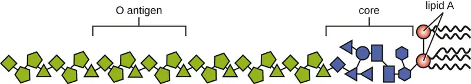
A classic method of detecting endotoxin is by using the Limulus amebocyte lysate (LAL) test. In this procedure, the blood cells (amebocytes) of the horseshoe crab (Limulus polyphemus) is mixed with a patient’s serum. The amebocytes will react to the presence of any endotoxin. This reaction can be observed either chromogenically (color) or by looking for coagulation (clotting reaction) to occur within the serum. An alternative method that has been used is an enzyme-linked immunosorbent assay (ELISA) that uses antibodies to detect the presence of endotoxin.
Unlike the toxic lipid A of endotoxin, exotoxins are protein molecules that are produced by a wide variety of living pathogenic bacteria. Although some gram-negative pathogens produce exotoxins, the majority are produced by gram-positive pathogens. Exotoxins differ from endotoxin in several other key characteristics, summarized in Table 15.9. In contrast to endotoxin, which stimulates a general systemic inflammatory response when released, exotoxins are much more specific in their action and the cells they interact with. Each exotoxin targets specific receptors on specific cells and damages those cells through unique molecular mechanisms. Endotoxin remains stable at high temperatures, and requires heating at 121 °C (250 °F) for 45 minutes to inactivate. By contrast, most exotoxins are heat labile because of their protein structure, and many are denatured (inactivated) at temperatures above 41 °C (106 °F). As discussed earlier, endotoxin can stimulate a lethal inflammatory response at very high concentrations and has a measured LD50 of 0.24 mg/kg. By contrast, very small concentrations of exotoxins can be lethal. For example, botulinum toxin, which causes botulism, has an LD50 of 0.000001 mg/kg (240,000 times more lethal than endotoxin).
Table 15.9
| Comparison of Endotoxin and Exotoxins Produced by Bacteria | ||
|---|---|---|
| Characteristic | Endotoxin | Exotoxin |
| Source | Gram-negative bacteria | Gram-positive (primarily) and gram-negative bacteria |
| Composition | Lipid A component of lipopolysaccharide | Protein |
| Effect on host | General systemic symptoms of inflammation and fever | Specific damage to cells dependent upon receptor-mediated targeting of cells and specific mechanisms of action |
| Heat stability | Heat stable | Most are heat labile, but some are heat stable |
| LD50 | High | Low |
The exotoxins can be grouped into three categories based on their target: intracellular targeting, membrane disrupting, and superantigens. Table 15.10 provides examples of well-characterized toxins within each of these three categories.
Table 15.10
| Some Common Exotoxins and Associated Bacterial Pathogens | |||
|---|---|---|---|
| Category | Example | Pathogen | Mechanism and Disease |
| Intracellular-targeting toxins | Cholera toxin | Vibrio cholerae | Activation of adenylate cyclase in intestinal cells, causing increased levels of cyclic adenosine monophosphate (cAMP) and secretion of fluids and electrolytes out of cell, causing diarrhea |
| Tetanus toxin | Clostridium tetani | Inhibits the release of inhibitory neurotransmitters in the central nervous system, causing spastic paralysis | |
| Botulinum toxin | Clostridium botulinum | Inhibits release of the neurotransmitter acetylcholine from neurons, resulting in flaccid paralysis | |
| Diphtheria toxin | Corynebacterium diphtheriae | Inhibition of protein synthesis, causing cellular death | |
| Membrane-disrupting toxins | Streptolysin | Streptococcus pyogenes | Proteins that assemble into pores in cell membranes, disrupting their function and killing the cell |
| Pneumolysin | Streptococcus pneumoniae | ||
| Alpha-toxin | Staphylococcus aureus | ||
| Alpha-toxin | Clostridium perfringens | Phospholipases that degrade cell membrane phospholipids, disrupting membrane function and killing the cell | |
| Phospholipase C | Pseudomonas aeruginosa | ||
| Beta-toxin | Staphylococcus aureus | ||
| Superantigens | Toxic shock syndrome toxin | Staphylococcus aureus | Stimulates excessive activation of immune system cells and release of cytokines (chemical mediators) from immune system cells. Life-threatening fever, inflammation, and shock are the result. |
| Streptococcal mitogenic exotoxin | Streptococcus pyogenes | ||
| Streptococcal pyrogenic toxins | Streptococcus pyogenes | ||
The intracellular targeting toxins comprise two components: A for activity and B for binding. Thus, these types of toxins are known as A-B exotoxins (Figure 15.14). The B component is responsible for the cellular specificity of the toxin and mediates the initial attachment of the toxin to specific cell surface receptors. Once the A-B toxin binds to the host cell, it is brought into the cell by endocytosis and entrapped in a vacuole. The A and B subunits separate as the vacuole acidifies. The A subunit then enters the cell cytoplasm and interferes with the specific internal cellular function that it targets.
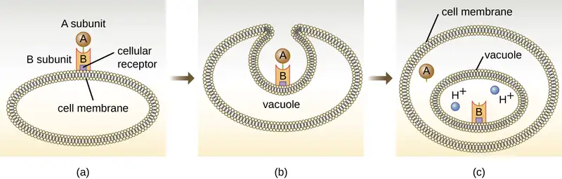
Four unique examples of A-B toxins are the diphtheria, cholera, botulinum, and tetanus toxins. The diphtheria toxin is produced by the gram-positive bacterium Corynebacterium diphtheriae, the causative agent of nasopharyngeal and cutaneous diphtheria. After the A subunit of the diphtheria toxin separates and gains access to the cytoplasm, it facilitates the transfer of adenosine diphosphate (ADP)-ribose onto an elongation-factor protein (EF-2) that is needed for protein synthesis. Hence, diphtheria toxin inhibits protein synthesis in the host cell, ultimately killing the cell (Figure 15.15).
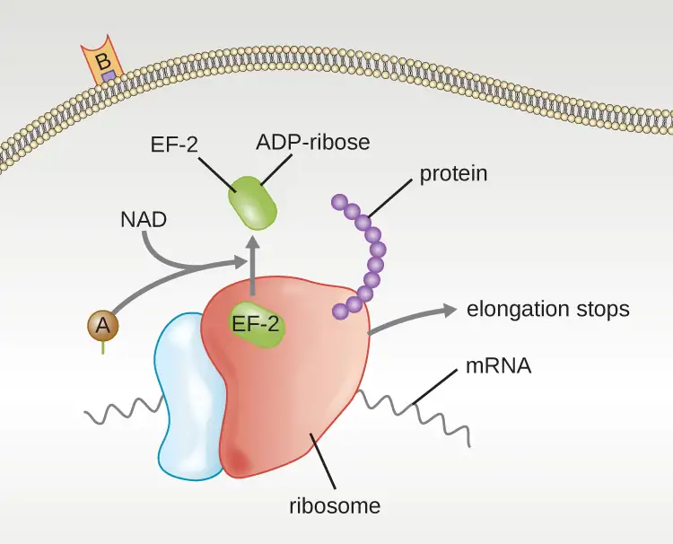
Cholera toxin is an enterotoxin produced by the gram-negative bacterium Vibrio cholerae and is composed of one A subunit and five B subunits. The mechanism of action of the cholera toxin is complex. The B subunits bind to receptors on the intestinal epithelial cell of the small intestine. After gaining entry into the cytoplasm of the epithelial cell, the A subunit activates an intracellular G protein. The activated G protein, in turn, leads to the activation of the enzyme adenyl cyclase, which begins to produce an increase in the concentration of cyclic AMP (a secondary messenger molecule). The increased cAMP disrupts the normal physiology of the intestinal epithelial cells and causes them to secrete excessive amounts of fluid and electrolytes into the lumen of the intestinal tract, resulting in severe “rice-water stool” diarrhea characteristic of cholera.
Botulinum toxin (also known as botox) is a neurotoxin produced by the gram-positive bacterium Clostridium botulinum. It is the most acutely toxic substance known to date. The toxin is composed of a light A subunit and heavy protein chain B subunit. The B subunit binds to neurons to allow botulinum toxin to enter the neurons at the neuromuscular junction. The A subunit acts as a protease, cleaving proteins involved in the neuron’s release of acetylcholine, a neurotransmitter molecule. Normally, neurons release acetylcholine to induce muscle fiber contractions. The toxin’s ability to block acetylcholine release results in the inhibition of muscle contractions, leading to muscle relaxation. This has the potential to stop breathing and cause death. Because of its action, low concentrations of botox are used for cosmetic and medical procedures, including the removal of wrinkles and treatment of overactive bladder.
Link to Learning
Click this link to see an animation of how the cholera toxin functions.
Click this link to see an animation of how the botulinum toxin functions.
Another neurotoxin is tetanus toxin, which is produced by the gram-positive bacterium Clostridium tetani. This toxin also has a light A subunit and heavy protein chain B subunit. Unlike botulinum toxin, tetanus toxin binds to inhibitory interneurons, which are responsible for release of the inhibitory neurotransmitters glycine and gamma-aminobutyric acid (GABA). Normally, these neurotransmitters bind to neurons at the neuromuscular junction, resulting in the inhibition of acetylcholine release. Tetanus toxin inhibits the release of glycine and GABA from the interneuron, resulting in permanent muscle contraction. The first symptom is typically stiffness of the jaw (lockjaw). Violent muscle spasms in other parts of the body follow, typically culminating with respiratory failure and death. Figure 15.16 shows the actions of both botulinum and tetanus toxins.
![Botulinum toxin causes flaccid paralysis and stops muscle contraction. The diagram shows that the normal mechanism has acetylcholine released at the axon terminal. The acetylcholine then binds to receptors on the membrane of a muscle cell. The abnormal mechanism – botulinum toxin blocks the release of acetylcholine stopping muscle contraction. Tetanus toxin causes spastic paralysis; uncontrollable muscle contraction. The normal mechanism shows glycine and GABA released from one axon terminal and binding to receptors on another axon terminal. This causes acetylcholine to remain in the vesicles and not bind to the receptors on the muscle cell. In the abnormal mechanism tetanus toxin prevents the release of glycine and GABA. Therefore acetylcholine is released and binds to receptors on the muscle. This prevents the relaxation of muscles.](img/osc-microbio-15-03-neurotoxin.webp)
Membrane-disrupting toxins affect cell membrane function either by forming pores or by disrupting the phospholipid bilayer in host cell membranes. Two types of membrane-disrupting exotoxins are hemolysins and leukocidins, which form pores in cell membranes, causing leakage of the cytoplasmic contents and cell lysis. These toxins were originally thought to target red blood cells (erythrocytes) and white blood cells (leukocytes), respectively, but we now know they can affect other cells as well. The gram-positive bacterium Streptococcus pyogenes produces streptolysins, water-soluble hemolysins that bind to the cholesterol moieties in the host cell membrane to form a pore. The two types of streptolysins, O and S, are categorized by their ability to cause hemolysis in erythrocytes in the absence or presence of oxygen. Streptolysin O is not active in the presence of oxygen, whereas streptolysin S is active in the presence of oxygen. Other important pore-forming membrane-disrupting toxins include alpha toxin of Staphylococcus aureus and pneumolysin of Streptococcus pneumoniae.
Bacterial phospholipases are membrane-disrupting toxins that degrade the phospholipid bilayer of cell membranes rather than forming pores. We have already discussed the phospholipases associated with B. anthracis, L. pneumophila, and Rickettsia species that enable these bacteria to effect the lysis of phagosomes. These same phospholipases are also hemolysins. Other phospholipases that function as hemolysins include the alpha toxin of Clostridium perfringens, phospholipase C of P. aeruginosa, and beta toxin of Staphylococcus aureus.
Some strains of S. aureus also produce a leukocidin called Panton-Valentine leukocidin (PVL). PVL consists of two subunits, S and F. The S component acts like the B subunit of an A-B exotoxin in that it binds to glycolipids on the outer plasma membrane of animal cells. The F-component acts like the A subunit of an A-B exotoxin and carries the enzymatic activity. The toxin inserts and assembles into a pore in the membrane. Genes that encode PVL are more frequently present in S. aureus strains that cause skin infections and pneumonia.8 PVL promotes skin infections by causing edema, erythema (reddening of the skin due to blood vessel dilation), and skin necrosis. PVL has also been shown to cause necrotizing pneumonia. PVL promotes pro-inflammatory and cytotoxic effects on alveolar leukocytes. This results in the release of enzymes from the leukocytes, which, in turn, cause damage to lung tissue.
The third class of exotoxins is the superantigens. These are exotoxins that trigger an excessive, nonspecific stimulation of immune cells to secrete cytokines (chemical messengers). The excessive production of cytokines, often called a cytokine storm, elicits a strong immune and inflammatory response that can cause life-threatening high fevers, low blood pressure, multi-organ failure, shock, and death. The prototype superantigen is the toxic shock syndrome toxin of S. aureus. Most toxic shock syndrome cases are associated with vaginal colonization by toxin-producing S. aureus in menstruating females; however, colonization of other body sites can also occur. Some strains of Streptococcus pyogenes also produce superantigens; they are referred to as the streptococcal mitogenic exotoxins and the streptococcal pyrogenic toxins.
Check Your Understanding
- Describe how exoenzymes contribute to bacterial invasion.
- Explain the difference between exotoxins and endotoxin.
- Name the three classes of exotoxins.
Virulence Factors for Survival in the Host and Immune Evasion¶
Evading the immune system is also important to invasiveness. Bacteria use a variety of virulence factors to evade phagocytosis by cells of the immune system. For example, many bacteria produce capsules, which are used in adhesion but also aid in immune evasion by preventing ingestion by phagocytes. The composition of the capsule prevents immune cells from being able to adhere and then phagocytose the cell. In addition, the capsule makes the bacterial cell much larger, making it harder for immune cells to engulf the pathogen (Figure 15.17). A notable capsule-producing bacterium is the gram-positive pathogen Streptococcus pneumoniae, which causes pneumococcal pneumonia, meningitis, septicemia, and other respiratory tract infections. Encapsulated strains of S. pneumoniae are more virulent than nonencapsulated strains and are more likely to invade the bloodstream and cause septicemia and meningitis.
Some pathogens can also produce proteases to protect themselves against phagocytosis. As described in Adaptive Specific Host Defenses, the human immune system produces antibodies that bind to surface molecules found on specific bacteria (e.g., capsules, fimbriae, flagella, LPS). This binding initiates phagocytosis and other mechanisms of antibacterial killing and clearance. Proteases combat antibody-mediated killing and clearance by attacking and digesting the antibody molecules (Figure 15.17).
In addition to capsules and proteases, some bacterial pathogens produce other virulence factors that allow them to evade the immune system. The fimbriae of certain species of Streptococcus contain M protein, which alters the surface of Streptococcus and inhibits phagocytosis by blocking the binding of the complement molecules that assist phagocytes in ingesting bacterial pathogens. The acid-fast bacterium Mycobacterium tuberculosis (the causative agent of tuberculosis) produces a waxy substance known as mycolic acid in its cell envelope. When it is engulfed by phagocytes in the lung, the protective mycolic acid coat enables the bacterium to resist some of the killing mechanisms within the phagolysosome.
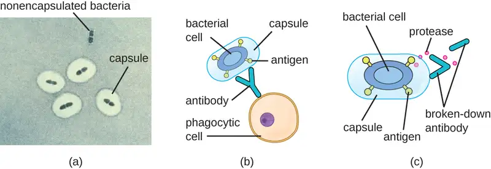
Some bacteria produce virulence factors that promote infection by exploiting molecules naturally produced by the host. For example, most strains of Staphylococcus aureus produce the exoenzyme coagulase, which exploits the natural mechanism of blood clotting to evade the immune system. Normally, blood clotting is triggered in response to blood vessel damage; platelets begin to plug the clot, and a cascade of reactions occurs in which fibrinogen, a soluble protein made by the liver, is cleaved into fibrin. Fibrin is an insoluble, thread-like protein that binds to blood platelets, cross-links, and contracts to form a mesh of clumped platelets and red blood cells. The resulting clot prevents further loss of blood from the damaged blood vessels. However, if bacteria release coagulase into the bloodstream, the fibrinogen-to-fibrin cascade is triggered in the absence of blood vessel damage. The resulting clot coats the bacteria in fibrin, protecting the bacteria from exposure to phagocytic immune cells circulating in the bloodstream.
Whereas coagulase causes blood to clot, kinases have the opposite effect by triggering the conversion of plasminogen to plasmin, which is involved in the digestion of fibrin clots. By digesting a clot, kinases allow pathogens trapped in the clot to escape and spread, similar to the way that collagenase, hyaluronidase, and DNAse facilitate the spread of infection. Examples of kinases include staphylokinases and streptokinases, produced by Staphylococcus aureus and Streptococcus pyogenes, respectively. It is intriguing that S. aureus can produce both coagulase to promote clotting and staphylokinase to stimulate the digestion of clots. The action of the coagulase provides an important protective barrier from the immune system, but when nutrient supplies are diminished or other conditions signal a need for the pathogen to escape and spread, the production of staphylokinase can initiate this process.
A final mechanism that pathogens can use to protect themselves against the immune system is called antigenic variation, which is the alteration of surface proteins so that a pathogen is no longer recognized by the host’s immune system. For example, the bacterium Borrelia burgdorferi, the causative agent of Lyme disease, contains a surface lipoprotein known as VlsE. Because of genetic recombination during DNA replication and repair, this bacterial protein undergoes antigenic variation. Each time fever occurs, the VlsE protein in B. burgdorferi can differ so much that antibodies against previous VlsE sequences are not effective. It is believed that this variation in the VlsE contributes to the ability B. burgdorferi to cause chronic disease. Another important human bacterial pathogen that uses antigenic variation to avoid the immune system is Neisseria gonorrhoeae, which causes the sexually transmitted disease gonorrhea. This bacterium is well known for its ability to undergo antigenic variation of its type IV pili to avoid immune defenses.
Check Your Understanding
- Name at least two ways that a capsule provides protection from the immune system.
- Besides capsules, name two other virulence factors used by bacteria to evade the immune system.
Clinical Focus: Resolution
Based on Michael’s reported symptoms of stiff neck and hemiparesis, the physician suspects that the infection may have spread to his nervous system. The physician decides to order a spinal tap to look for any bacteria that may have invaded the meninges and cerebrospinal fluid (CSF), which would normally be sterile. To perform the spinal tap, Michael’s lower back is swabbed with an iodine antiseptic and then covered with a sterile sheet. The needle is aseptically removed from the manufacturer’s sealed plastic packaging by the clinician’s gloved hands. The needle is inserted and a small volume of fluid is drawn into an attached sample tube. The tube is removed, capped and a prepared label with Michael’s data is affixed to it. This STAT (urgent or immediate analysis required) specimen is divided into three separate sterile tubes, each with 1 mL of CSF. These tubes are immediately taken to the hospital’s lab, where they are analyzed in the clinical chemistry, hematology, and microbiology departments. The preliminary results from all three departments indicate there is a cerebrospinal infection occurring, with the microbiology department reporting the presence of a gram-positive rod in Michael’s CSF.
These results confirm what his physician had suspected: Michael’s new symptoms are the result of meningitis, acute inflammation of the membranes that protect the brain and spinal cord. Because meningitis can be life threatening and because the first antibiotic therapy was not effective in preventing the spread of infection, Michael is prescribed an aggressive course of two antibiotics, ampicillin and gentamicin, to be delivered intravenously. Michael remains in the hospital for several days for supportive care and for observation. After a week, he is allowed to return home for bed rest and oral antibiotics. After 3 weeks of this treatment, he makes a full recovery.
Go back to the previous Clinical Focus box.
Viral Virulence¶
Although viral pathogens are not similar to bacterial pathogens in terms of structure, some of the properties that contribute to their virulence are similar. Viruses use adhesins to facilitate adhesion to host cells, and certain enveloped viruses rely on antigenic variation to avoid the host immune defenses. These virulence factors are discussed in more detail in the following sections.
Viral Adhesins¶
One of the first steps in any viral infection is adhesion of the virus to specific receptors on the surface of cells. This process is mediated by adhesins that are part of the viral capsid or membrane envelope. The interaction of viral adhesins with specific cell receptors defines the tropism (preferential targeting) of viruses for specific cells, tissues, and organs in the body. The spike protein hemagglutinin found on Influenzavirus is an example of a viral adhesin; it allows the virus to bind to the sialic acid on the membrane of host respiratory and intestinal cells. Another viral adhesin is the glycoprotein gp120, found on HIV. For HIV to infect cells of the immune system, it must interact with two receptors on the surface of cells. The first interaction involves binding between gp120 and the CD4 cellular marker that is found on some essential immune system cells. However, before viral entry into the cell can occur, a second interaction between gp120 and one of two chemokine receptors (CCR5 and CXCR4) must occur. Table 15.11 lists the adhesins for some common viral pathogens and the specific sites to which these adhesins allow viruses to attach.
Table 15.11
| Some Viral Adhesins and Their Host Attachment Sites | |||
|---|---|---|---|
| Pathogen | Disease | Adhesin | Attachment Site |
| Influenzavirus | Influenza | Hemagglutinin | Sialic acid of respiratory and intestinal cells |
| Herpes simplex virus I or II | Oral herpes, genital herpes | Glycoproteins gB, gC, gD | Heparan sulfate on mucosal surfaces of the mouth and genitals |
| Human immunodeficiency virus | HIV/AIDS | Glycoprotein gp120 | CD4 and CCR5 or CXCR4 of immune system cells |
Antigenic Variation in Viruses¶
Antigenic variation also occurs in certain types of enveloped viruses, including influenza viruses, which exhibit two forms of antigenic variation: antigenic drift and antigenic shift (Figure 15.18). Antigenic drift is the result of point mutations causing slight changes in the spike proteins hemagglutinin (H) and neuraminidase (N). On the other hand, antigenic shift is a major change in spike proteins due to gene reassortment. This reassortment for antigenic shift occurs typically when two different influenza viruses infect the same host.
The rate of antigenic variation in influenza viruses is very high, making it difficult for the immune system to recognize the many different strains of Influenzavirus. Although the body may develop immunity to one strain through natural exposure or vaccination, antigenic variation results in the continual emergence of new strains that the immune system will not recognize. This is the main reason that vaccines against Influenzavirus must be given annually. Each year’s influenza vaccine provides protection against the most prevalent strains for that year, but new or different strains may be more prevalent the following year.
![a) antigenic drift results from genetic mutations. Virus A is shown with different shaped pieces on the outside labeled neuraminidase and hemagglutinin. The mutated hemagglutinin has a different shape. B) Antigenic shift results from genetic reassortment. Virus A has green hemagglutinin and orange neuraminidase on the outside. Virus B has purple neuraminidase and blue hemagglutinin. These both enter the same host cell. Virus C is then produced which has the neuraminidase from virus A and the hemagglutinin from virus B.](img/osc-microbio-15-03-flu.webp)
Link to Learning
For another explanation of how antigenic shift and drift occur, watch this video.
Check Your Understanding
- Describe the role of adhesins in viral tropism.
- Explain the difference between antigenic drift and antigenic shift.
15.4 Virulence Factors of Eukaryotic Pathogens¶
Learning Objectives
By the end of this section, you will be able to:
- Describe virulence factors unique to fungi and parasites
- Compare virulence factors of fungi and bacteria
- Explain the difference between protozoan parasites and helminths
- Describe how helminths evade the host immune system
Although fungi and parasites are important pathogens causing infectious diseases, their pathogenic mechanisms and virulence factors are not as well characterized as those of bacteria. Despite the relative lack of detailed mechanisms, the stages of pathogenesis and general mechanisms of virulence involved in disease production by these pathogens are similar to those of bacteria.
Fungal Virulence¶
Pathogenic fungi can produce virulence factors that are similar to the bacterial virulence factors that have been discussed earlier in this chapter. In this section, we will look at the virulence factors associated with species of Candida, Cryptococcus, Claviceps, and Aspergillus.
Candida albicans is an opportunistic fungal pathogen and causative agent of oral thrush, vaginal yeast infections, and cutaneous candidiasis. Candida produces adhesins (surface glycoproteins) that bind to the phospholipids of epithelial and endothelial cells. To assist in spread and tissue invasion, Candida produces proteases and phospholipases (i.e., exoenzymes). One of these proteases degrades keratin, a structural protein found on epithelial cells, enhancing the ability of the fungus to invade host tissue. In animal studies, it has been shown that the addition of a protease inhibitor led to attenuation of Candida infection.9 Similarly, the phospholipases can affect the integrity of host cell membranes to facilitate invasion.
The main virulence factor for Cryptococcus, a fungus that causes pneumonia and meningitis, is capsule production. The polysaccharide glucuronoxylomannan is the principal constituent of the Cryptococcus capsule. Similar to encapsulated bacterial cells, encapsulated Cryptococcus cells are more resistant to phagocytosis than nonencapsulated Cryptococcus, which are effectively phagocytosed and, therefore, less virulent.
Like some bacteria, many fungi produce exotoxins. Fungal toxins are called mycotoxins. Claviceps purpurea, a fungus that grows on rye and related grains, produces a mycotoxin called ergot toxin, an alkaloid responsible for the disease known as ergotism. There are two forms of ergotism: gangrenous and convulsive. In gangrenous ergotism, the ergot toxin causes vasoconstriction, resulting in improper blood flow to the extremities, eventually leading to gangrene. A famous outbreak of gangrenous ergotism occurred in Eastern Europe during the 5th century AD due to the consumption of rye contaminated with C. purpurea. In convulsive ergotism, the toxin targets the central nervous system, causing mania and hallucinations.
The mycotoxin aflatoxin is a virulence factor produced by the fungus Aspergillus, an opportunistic pathogen that can enter the body via contaminated food or by inhalation. Inhalation of the fungus can lead to the chronic pulmonary disease aspergillosis, characterized by fever, bloody sputum, and/or asthma. Aflatoxin acts in the host as both a mutagen (a substance that causes mutations in DNA) and a carcinogen (a substance involved in causing cancer), and has been associated with the development of liver cancer. Aflatoxin has also been shown to cross the blood-placental barrier.10 A second mycotoxin produced by Aspergillus is gliotoxin. This toxin promotes virulence by inducing host cells to self-destruct and by evading the host’s immune response by inhibiting the function of phagocytic cells as well as the pro-inflammatory response. Like Candida, Aspergillus also produces several proteases. One is elastase, which breaks down the protein elastin found in the connective tissue of the lung, leading to the development of lung disease. Another is catalase, an enzyme that protects the fungus from hydrogen peroxide produced by the immune system to destroy pathogens.
Check Your Understanding
- List virulence factors common to bacteria and fungi.
- What functions do mycotoxins perform to help fungi survive in the host?
Protozoan Virulence¶
Protozoan pathogens are unicellular eukaryotic parasites that have virulence factors and pathogenic mechanisms analogous to prokaryotic and viral pathogens, including adhesins, toxins, antigenic variation, and the ability to survive inside phagocytic vesicles.
Protozoans often have unique features for attaching to host cells. The protozoan Giardia lamblia, which causes the intestinal disease giardiasis, uses a large adhesive disc composed of microtubules to attach to the intestinal mucosa. During adhesion, the flagella of G. lamblia move in a manner that draws fluid out from under the disc, resulting in an area of lower pressure that facilitates adhesion to epithelial cells. Giardia does not invade the intestinal cells but rather causes inflammation (possibly through the release of cytopathic substances that cause damage to the cells) and shortens the intestinal villi, inhibiting absorption of nutrients.
Some protozoans are capable of antigenic variation. The obligate intracellular pathogen Plasmodium falciparum (one of the causative agents of malaria) resides inside red blood cells, where it produces an adhesin membrane protein known as PfEMP1. This protein is expressed on the surface of the infected erythrocytes, causing blood cells to stick to each other and to the walls of blood vessels. This process impedes blood flow, sometimes leading to organ failure, anemia, jaundice (yellowing of skin and sclera of the eyes due to buildup of bilirubin from lysed red blood cells), and, subsequently, death. Although PfEMP1 can be recognized by the host’s immune system, antigenic variations in the structure of the protein over time prevent it from being easily recognized and eliminated. This allows malaria to persist as a chronic infection in many individuals.
The virulence factors of Trypanosoma brucei, the causative agent of African sleeping sickness, include the abilities to form capsules and undergo antigenic variation. T. brucei evades phagocytosis by producing a dense glycoprotein coat that resembles a bacterial capsule. Over time, host antibodies are produced that recognize this coat, but T. brucei is able to alter the structure of the glycoprotein to evade recognition.
Check Your Understanding
- Explain how antigenic variation by protozoan pathogens helps them survive in the host.
Helminth Virulence¶
Helminths, or parasitic worms, are multicellular eukaryotic parasites that depend heavily on virulence factors that allow them to gain entry to host tissues. For example, the aquatic larval form of Schistosoma mansoni, which causes schistosomiasis, penetrates intact skin with the aid of proteases that degrade skin proteins, including elastin.
To survive within the host long enough to perpetuate their often-complex life cycles, helminths need to evade the immune system. Some helminths are so large that the immune system is ineffective against them. Others, such as adult roundworms (which cause trichinosis, ascariasis, and other diseases), are protected by a tough outer cuticle.
Over the course of their life cycles, the surface characteristics of the parasites vary, which may help prevent an effective immune response. Some helminths express polysaccharides called glycans on their external surface; because these glycans resemble molecules produced by host cells, the immune system fails to recognize and attack the helminth as a foreign body. This “glycan gimmickry,” as it has been called, serves as a protective cloak that allows the helminth to escape detection by the immune system.11
In addition to evading host defenses, helminths can actively suppress the immune system. S. mansoni, for example, degrades host antibodies with proteases. Helminths produce many other substances that suppress elements of both innate nonspecific and adaptive specific host defenses. They also release large amounts of material into the host that may locally overwhelm the immune system or cause it to respond inappropriately.
Check Your Understanding
- Describe how helminths avoid being destroyed by the host immune system.
Chapter Review¶
Key Concepts and Summary¶
15.1 Characteristics of Infectious Disease¶
- In an infection, a microorganism enters a host and begins to multiply. Some infections cause disease, which is any deviation from the normal function or structure of the host.
- Signs of a disease are objective and are measured. Symptoms of a disease are subjective and are reported by the patient.
- Diseases can either be noninfectious (due to genetics and environment) or infectious (due to pathogens). Some infectious diseases are communicable (transmissible between individuals) or contagious (easily transmissible between individuals); others are noncommunicable, but may be contracted via contact with environmental reservoirs or animals (zoonoses)
- Nosocomial diseases are contracted in hospital settings, whereas iatrogenic disease are the direct result of a medical procedure
- An acute disease is short in duration, whereas a chronic disease lasts for months or years. Latent diseases last for years, but are distinguished from chronic diseases by the lack of active replication during extended dormant periods.
- The periods of disease include the incubation period, the prodromal period, the period of illness, the period of decline, and the period of convalescence. These periods are marked by changes in the number of infectious agents and the severity of signs and symptoms.
15.2 How Pathogens Cause Disease¶
- Koch’s postulates are used to determine whether a particular microorganism is a pathogen. Molecular Koch’s postulates are used to determine what genes contribute to a pathogen’s ability to cause disease.
- Virulence, the degree to which a pathogen can cause disease, can be quantified by calculating either the ID50 or LD50 of a pathogen on a given population.
- Primary pathogens are capable of causing pathological changes associated with disease in a healthy individual, whereas opportunistic pathogens can only cause disease when the individual is compromised by a break in protective barriers or immunosuppression.
- Infections and disease can be caused by pathogens in the environment or microbes in an individual’s resident microbiota.
- Infections can be classified as local, focal, or systemic depending on the extent to which the pathogen spreads in the body.
- A secondary infection can sometimes occur after the host’s defenses or normal microbiota are compromised by a primary infection or antibiotic treatment.
- Pathogens enter the body through portals of entry and leave through portals of exit. The stages of pathogenesis include exposure, adhesion, invasion, infection, and transmission.
15.3 Virulence Factors of Bacterial and Viral Pathogens¶
- Virulence factors contribute to a pathogen’s ability to cause disease.
- Exoenzymes and toxins allow pathogens to invade host tissue and cause tissue damage. Exoenzymes are classified according to the macromolecule they target and exotoxins are classified based on their mechanism of action.
- Bacterial toxins include endotoxin and exotoxins. Endotoxin is the lipid A component of the LPS of the gram-negative cell envelope. Exotoxins are proteins secreted mainly by gram-positive bacteria, but also are secreted by gram-negative bacteria.
- Bacterial pathogens may evade the host immune response by producing capsules to avoid phagocytosis, surviving the intracellular environment of phagocytes, degrading antibodies, or through antigenic variation.
- Viral pathogens use adhesins for initiating infections and antigenic variation to avoid immune defenses.
- Influenza viruses use both antigenic drift and antigenic shift to avoid being recognized by the immune system.
15.4 Virulence Factors of Eukaryotic Pathogens¶
- Fungal and parasitic pathogens use pathogenic mechanisms and virulence factors that are similar to those of bacterial pathogens
- Fungi initiate infections through the interaction of adhesins with receptors on host cells. Some fungi produce toxins and exoenzymes involved in disease production and capsules that provide protection of phagocytosis.
- Protozoa adhere to target cells through complex mechanisms and can cause cellular damage through release of cytopathic substances. Some protozoa avoid the immune system through antigenic variation and production of capsules.
- Helminthic worms are able to avoid the immune system by coating their exteriors with glycan molecules that make them look like host cells or by suppressing the immune system.
Multiple Choice¶
15.1 Characteristics of Infectious Disease¶
1. Which of the following would be a sign of an infection?
- muscle aches
- headache
- fever
- nausea
Answer
C
2. Which of the following is an example of a noncommunicable infectious disease?
- infection with a respiratory virus
- food poisoning due to a preformed bacterial toxin in food
- skin infection acquired from a dog bite
- infection acquired from the stick of a contaminated needle
Answer
B
3. During an oral surgery, the surgeon nicked the patient’s gum with a sharp instrument. This allowed Streptococcus, a bacterium normally present in the mouth, to gain access to the blood. As a result, the patient developed bacterial endocarditis (an infection of the heart). Which type of disease is this?
- iatrogenic
- nosocomial
- vectors
- zoonotic
Answer
A
4. Which period is the stage of disease during which the patient begins to present general signs and symptoms?
- convalescence
- incubation
- illness
- prodromal
Answer
D
5. A communicable disease that can be easily transmitted from person to person is which type of disease?
- contagious
- iatrogenic
- acute
- nosocomial
Answer
A
15.2 How Pathogens Cause Disease¶
6. Which of the following is a pathogen that could not be identified by the original Koch’s postulates?
- Staphylococcus aureus
- Pseudomonas aeruginosa
- Human immunodeficiency virus
- Salmonella enterica serovar Typhimurium
Answer
C
7. Pathogen A has an ID50 of 50 particles, pathogen B has an ID50 of 1,000 particles, and pathogen C has an ID50 of 1 × 106 particles. Which pathogen is most virulent?
- pathogen A
- pathogen B
- pathogen C
Answer
A
8. Which of the following choices lists the steps of pathogenesis in the correct order?
- invasion, infection, adhesion, exposure
- adhesion, exposure, infection, invasion
- exposure, adhesion, invasion, infection
- disease, infection, exposure, invasion
Answer
C
15.3 Virulence Factors of Bacterial and Viral Pathogens¶
9. Which of the following would be a virulence factor of a pathogen?
- a surface protein allowing the pathogen to bind to host cells
- a secondary host the pathogen can infect
- a surface protein the host immune system recognizes
- the ability to form a provirus
Answer
A
10. You have recently identified a new toxin. It is produced by a gram-negative bacterium. It is composed mostly of protein, has high toxicity, and is not heat stable. You also discover that it targets liver cells. Based on these characteristics, how would you classify this toxin?
- superantigen
- endotoxin
- exotoxin
- leukocidin
Answer
C
11. Which of the following applies to hyaluronidase?
- It acts as a spreading factor.
- It promotes blood clotting.
- It is an example of an adhesin.
- It is produced by immune cells to target pathogens.
Answer
A
12. Phospholipases are enzymes that do which of the following?
- degrade antibodies
- promote pathogen spread through connective tissue.
- degrade nucleic acid to promote spread of pathogen
- degrade cell membranes to allow pathogens to escape phagosomes
Answer
D
15.4 Virulence Factors of Eukaryotic Pathogens¶
13. Which of the following is a major virulence factor for the fungal pathogen Cryptococcus?
- hemolysin
- capsule
- collagenase
- fimbriae
Answer
B
14. Which of the following pathogens undergoes antigenic variation to avoid immune defenses?
- Candida
- Cryptococcus
- Plasmodium
- Giardia
Answer
C
Fill in the Blank¶
15.1 Characteristics of Infectious Disease¶
15. A difference between an acute disease and chronic disease is that chronic diseases have an extended period of __________.
Answer
illness
16. A person steps on a rusty nail and develops tetanus. In this case, the person has acquired a(n) __________ disease.
Answer
noncommunicable
15.2 How Pathogens Cause Disease¶
17. A(n) __________ pathogen causes disease only when conditions are favorable for the microorganism because of transfer to an inappropriate body site or weakened immunity in an individual.
Answer
opportunistic
18. The concentration of pathogen needed to kill 50% of an infected group of test animals is the __________.
Answer
LD50
19. A(n) __________ infection is a small region of infection from which a pathogen may move to another part of the body to establish a second infection.
Answer
focal
20. Cilia, fimbriae, and pili are all examples of structures used by microbes for __________.
Answer
adhesion
15.3 Virulence Factors of Bacterial and Viral Pathogens¶
21. The glycoprotein adhesion gp120 on HIV must interact with __________ on some immune cells as the first step in the process of infecting the cell.
Answer
CD4
22. Adhesins are usually located on __________ of the pathogen and are composed mainly of __________ and __________.
Answer
surface; proteins; sugars
23. The Shiga and diphtheria toxins target __________ in host cells.
Answer
protein synthesis
24. Antigenic __________ is the result of reassortment of genes responsible for the production of influenza virus spike proteins between different virus particles while in the same host, whereas antigenic __________ is the result of point mutations in the spike proteins.
Answer
shift; drift
15.4 Virulence Factors of Eukaryotic Pathogens¶
25. Candida can invade tissue by producing the exoenzymes __________ and __________.
Answer
protease and phospholipase
26. The larval form of Schistosoma mansoni uses a __________ to help it gain entry through intact skin.
Answer
protease
Short Answer¶
15.1 Characteristics of Infectious Disease¶
27. Brian goes to the hospital after not feeling well for a week. He has a fever of 38 °C (100.4 °F) and complains of nausea and a constant migraine. Distinguish between the signs and symptoms of disease in Brian’s case.
15.4 Virulence Factors of Eukaryotic Pathogens¶
28. Describe the virulence factors associated with the fungal pathogen Aspergillus.
29. Explain how helminths evade the immune system.
Critical Thinking¶
15.1 Characteristics of Infectious Disease¶
30. Two periods of acute disease are the periods of illness and period of decline. (a) In what way are both of these periods similar? (b) In terms of quantity of pathogen, in what way are these periods different? (c) What initiates the period of decline?
31. In July 2015, a report (C. Owens. “P. aeruginosa survives in sinks 10 years after hospital outbreak.” 2015. http://www.healio.com/infectious-disease/nosocomial-infections/news/online/%7B5afba909-56d9-48cc-a9b0-ffe4568161e8%7D/p-aeruginosa-survives-in-sinks-10-years-after-hospital-outbreak) was released indicating the gram-negative bacterium Pseudomonas aeruginosa was found on hospital sinks 10 years after the initial outbreak in a neonatal intensive care unit. P. aeruginosa usually causes localized ear and eye infections but can cause pneumonia or septicemia in vulnerable individuals like newborn babies. Explain how the current discovery of the presence of this reported P. aeruginosa could lead to a recurrence of nosocomial disease.
15.2 How Pathogens Cause Disease¶
32. Diseases that involve biofilm-producing bacteria are of serious concern. They are not as easily treated compared with those involving free-floating (or planktonic) bacteria. Explain three reasons why biofilm formers are more pathogenic.
33. A microbiologist has identified a new gram-negative pathogen that causes liver disease in rats. She suspects that the bacterium’s fimbriae are a virulence factor. Describe how molecular Koch’s postulates could be used to test this hypothesis.
34. Acupuncture is a form of alternative medicine that is used for pain relief. Explain how acupuncture could facilitate exposure to pathogens.
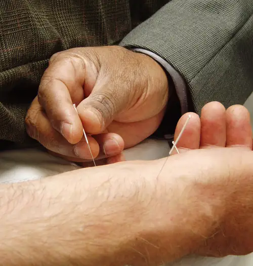
15.3 Virulence Factors of Bacterial and Viral Pathogens¶
35. Two types of toxins are hemolysins and leukocidins. (a) How are these toxins similar? (b) How do they differ?
36. Imagine that a mutation in the gene encoding the cholera toxin was made. This mutation affects the A-subunit, preventing it from interacting with any host protein. (a) Would the toxin be able to enter into the intestinal epithelial cell? (b) Would the toxin be able to cause diarrhea?
Adapted from Microbiology by OpenStax, licensed under CC BY 4.0. Access the original for free at openstax.org. Changes: converted to the web reading format of The Open Book Project.
-
F. Savino et al. “Pain Assessment in Children Undergoing Venipuncture: The Wong–Baker Faces Scale Versus Skin Conductance Fluctuations.” PeerJ 1 (2013):e37; https://peerj.com/articles/37/ ↩
-
J.G. Kusters et al. Pathogenesis of Helicobacter pylori Infection. Clinical Microbiology Reviews 19 no. 3 (2006):449–490. ↩
-
N.R. Salama et al. “Life in the Human Stomach: Persistence Strategies of the Bacterial Pathogen Helicobacter pylori.” Nature Reviews Microbiology 11 (2013):385–399. ↩
-
Food and Drug Administration. “Bad Bug Book, Foodborne Pathogenic Microorganisms and Natural Toxins.” 2nd ed. Silver Spring, MD: US Food and Drug Administration; 2012. ↩
-
M. Otto. “Staphylococcus epidermidis--The ‘Accidental’ Pathogen.” Nature Reviews Microbiology 7 no. 8 (2009):555–567. ↩
-
The O in TORCH stands for “other.” ↩
-
D. Davies. “Understanding Biofilm Resistance to Antibacterial Agents.” Nature Reviews Drug Discovery 2 (2003):114–122. ↩
-
V. Meka. “Panton-Valentine Leukocidin.” http://www.antimicrobe.org/h04c.files/history/PVL-S-aureus.asp ↩
-
K. Fallon et al. “Role of Aspartic Proteases in Disseminated Candida albicans Infection in Mice.” Infection and Immunity 65 no. 2 (1997):551–556. ↩
-
C.P. Wild et al. “In-utero exposure to aflatoxin in west Africa.” Lancet 337 no. 8757 (1991):1602. ↩
-
I. van Die, R.D. Cummings. “Glycan Gimmickry by Parasitic Helminths: A Strategy for Modulating the Host Immune Response?” Glycobiology 20 no. 1 (2010):2–12. ↩